Sprache wählen · Choose your language
Strategie-, Timing- und Kommunikations-Anleitung für Last War: Survival. Pro Thema: Fakten, die passenden Guide-Grafiken, ein Ankündigungstext (ohne Emoji) und eine Allianz-Mail (mit Emoji) zum Kopieren, plus eine Sammel-Mail pro Woche.
IN-GAME PRÜFEN.
Guide erstellt von Luna · Stand August 2026 · dient als Guide für die [RZSN] Rising Sun Allianz auf Server 2261.
Strategy, timing and communication guide for Last War: Survival. Per topic: facts, the matching guide graphics, an announcement text (no emoji) and an alliance mail (with emoji) to copy, plus one roundup mail per week.
CHECK IN-GAME.
Guide created by Luna · as of August 2026 · serves as the guide for the [RZSN] Rising Sun alliance on server 2261.
Freischalt-Reihenfolge der Season-Events laut Guide-Grafiken.
Die Dauer-Mechaniken, die die ganze Season über zählen. Antippen führt zum Detail-Abschnitt.
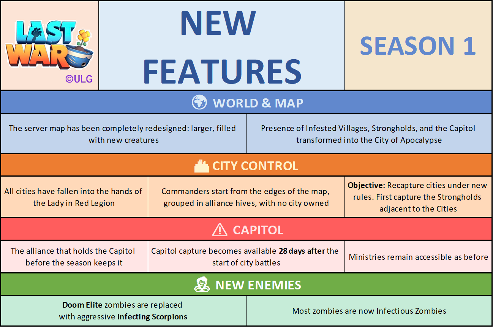
Season 1 „Crimson Plague" startet. Die Server-Karte ist komplett neu: größer, mit infizierten Dörfern, Strongholds und dem Capitol als City of Apocalypse. Alle Städte gehören zu Beginn der Lady in Red Legion. Wir starten am Kartenrand in unserem Hive, ganz ohne Stadtbesitz. Ziel ist es, Städte zurückzuerobern. Der Weg dorthin führt immer über die Strongholds direkt neben den Städten. Achtung: Die meisten Zombies sind jetzt infektiös und können unsere Truppen anstecken. Vorbereitung entscheidet.
🦠 SEASON 1 IST DA – „CRIMSON PLAGUE"! 🦠 Leute, alles ist anders! 🗺️ Die Karte ist komplett neu, größer und voller neuer Viecher. Städte, infizierte Dörfer, Strongholds – und das Capitol ist jetzt die „City of Apocalypse". 😱 👉 Wichtig zum Start: 🔴 Alle Städte gehören der Lady in Red Legion – wir starten mit NULL Stadtbesitz am Rand, in unserem Hive. 🏰 Um eine Stadt zu holen, brauchen wir IMMER zuerst den Stronghold direkt daneben. 🏛️ Das Capitol kann erst 28 Tage nach Start der City-Battles erobert werden – Geduld! 🧟 Fast alle Zombies stecken jetzt an. Ohne Resistenz verlieren wir Truppen. Macht euch bereit, wir ziehen das gemeinsam durch! 💪🔥
Das Herzstück der Season. Kämpfe gegen bestimmte Gegner infizieren deine Truppen. Ist das Virus Research Institute nicht hoch genug, sammeln sich Virus Stacks (0–100) an, je mehr, desto härter die Debuffs.
Ist das Zombie-Level höher als deine Virus-Resistenz, sinkt dein Schaden massiv. Beispiel aus dem Guide: benötigt 6.800 Resistenz, du hast 4.200 → −96 % Schaden. Vor jedem Angriff die geforderte Resistenz prüfen.
Zombies haben jetzt Typen: Tank / Aircraft / Missile. Truppenzusammensetzung anpassen, um Schaden zu maximieren und Verluste zu senken.
| Schwelle | Debuff | Effekt |
|---|---|---|
| 1 | Hospital Stay | 1 schwer verwundete Einheit alle 300–200s |
| 20 | Morale is Low | −4 % bis −20 % ausgeteilter Schaden |
| 40 | Fatal Virus | +4 % bis +10 % eigene Verluste |
| 60 | Virus Plague | 6–10 % Chance, den Gegner selbst bei Sieg zu verlieren |
| 100 | Virus Blast | Nach 30s-Countdown explodiert die Basis, infiziert zufällig, auch Nachbarbasen. Max 100 Stacks = alle Debuffs zugleich. |
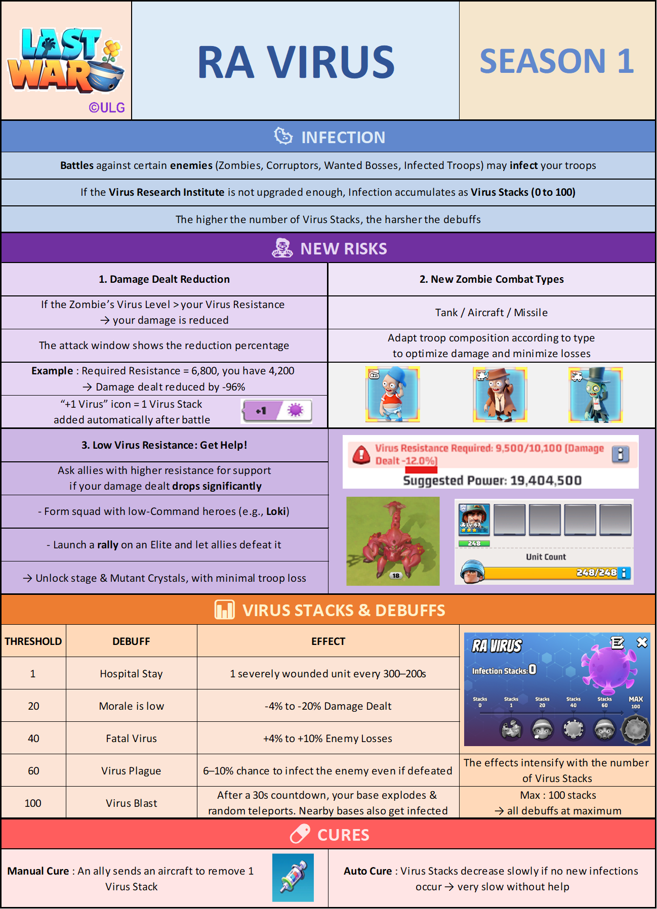
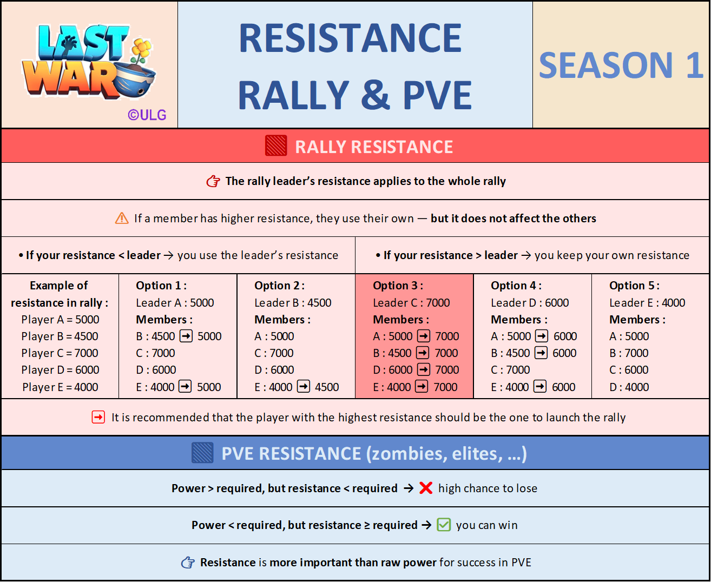
Das RA-Virus ist die Kernmechanik der Season. Kämpfe gegen bestimmte Gegner infizieren eure Truppen. Ist euer Virus Research Institute zu niedrig, sammeln sich Virus Stacks von 0 bis 100 an, und die Debuffs werden härter: ab Stufe 20 sinkt euer Schaden, ab 40 steigen Verluste, ab 60 könnt ihr Gegner trotz Sieg verlieren, bei 100 explodiert die Basis. Prüft vor jedem Angriff die geforderte Resistenz. Ist sie zu niedrig, greift nicht allein an, sondern fordert Kuren im Chat an oder startet eine Rally mit einem Ally, der höhere Resistenz hat.
🦠 DAS RA-VIRUS – LEST DAS, SONST VERLIERT IHR TRUPPEN! 🦠 Kämpfe gegen infizierte Gegner stecken eure Truppen an. 🧟 Wenn euer Virus Research Institute zu niedrig ist, sammeln sich VIRUS STACKS (0–100) – und die machen euch fertig: 🔸 Ab 20 → weniger Schaden 📉 🔸 Ab 40 → mehr eigene Verluste 💀 🔸 Ab 60 → ihr verliert Gegner sogar bei Sieg 😵 🔸 Bei 100 → BOOM, Basis explodiert und steckt Nachbarn an! 💥 ✅ SO ÜBERLEBT IHR: 🔍 IMMER erst die geforderte Resistenz checken, bevor ihr angreift! 🆘 Zu niedrig? NICHT allein angreifen – Kur im Chat anfordern! ✈️ 🤝 Rally mit Ally starten, der mehr Resistenz hat – seine Resistenz gilt für die ganze Rally! 🧑✈️ Trick: Squad mit Low-Command-Held (z.B. Loki) + Rally auf Elite, Allys erledigen ihn = kaum Verluste! ⚠️ Vorsicht Auto-Rally: Schickt Truppen auf Basen, damit ihr nicht in fremde Offline-Rallies gezogen werdet! Fragt lieber einmal zu viel als einmal zu wenig! 💪
Erste 2 Tage immer Cloudy, ab Tag 3 zufälliges Wetter, Wechsel alle 30 Min bis 8 h. Monica sagt 3 mögliche Wetter mit Wahrscheinlichkeit voraus.
| Wetter | Effekt |
|---|---|
| Acid Rain | Fügt periodisch Virus Stacks bei allen Basen der War Zone hinzu, Angriffe & PvP möglichst vermeiden |
| Sunny | +30 % Profession-EXP beim Töten von Monstern |
| Foggy / Brumeux | Monster starten mit +2 Virus Stacks |
| Rainbow | Alle Commander erhalten reguläre Profession-EXP |
| Windy | Marschgeschwindigkeit −30 % (Rallies/Verstärkungen einplanen) |
| Light Rain | Truppen nehmen keine Virus Stacks auf → ideal für riskante Elite-/Zombie-Angriffe |
| Cloudy | Neutral, kein Effekt |
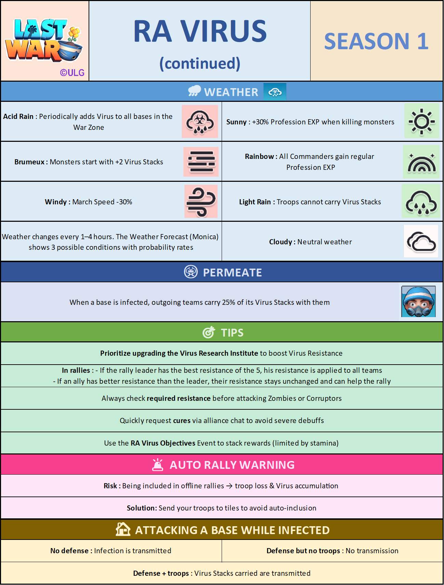
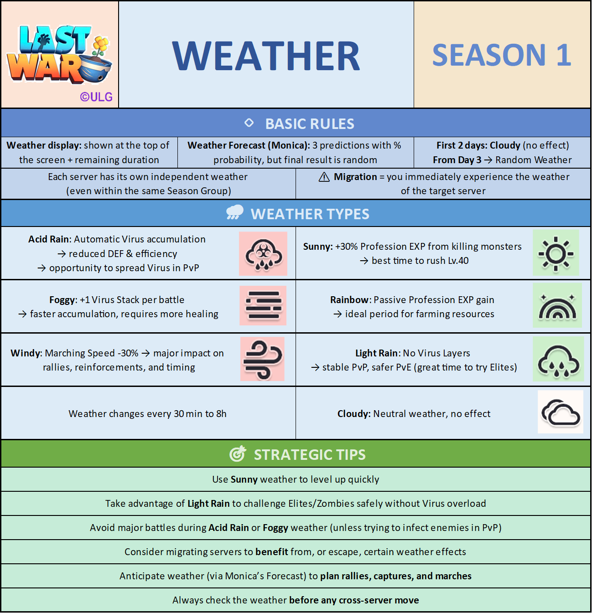
Das Wetter steuert diese Season eure Taktik. Die ersten zwei Tage ist es bewölkt, ab Tag 3 wechselt es zufällig alle 30 Minuten bis 8 Stunden. Monica sagt drei mögliche Wetterlagen mit Wahrscheinlichkeit voraus, nutzt das zum Planen. Merkt euch: Bei Sunny gibt es plus 30 Prozent Profession-EXP durch Monster, also dann farmen. Bei Light Rain nehmen Truppen keine Virus Stacks auf, ideal für gefährliche Elite-Angriffe. Bei Acid Rain sammeln alle Basen Virus Stacks an, dann keine Rallies und keinen PvP. Bei Windy sinkt die Marschgeschwindigkeit um 30 Prozent.
🌦️ WETTER = TAKTIK! Timing ist alles diese Season! 🌦️ Ab Tag 3 wechselt das Wetter zufällig (alle 30 Min – 8 Std). Monica 🔮 sagt euch 3 mögliche Wetter mit % voraus – schaut da REIN, bevor ihr plant! ☀️ SUNNY → +30% Profession-EXP durch Monster → FARMEN! 🌧️ LIGHT RAIN → Truppen kriegen KEINE Virus Stacks → jetzt gefährliche Elites angreifen! 💪 ☢️ ACID RAIN → alle Basen sammeln Virus Stacks → KEINE Rally, KEIN PvP! ⛔ 🌫️ FOGGY → Monster starten mit +2 Stacks 😬 💨 WINDY → Marsch −30% → mehr Zeit für Rallies einplanen! ☁️ CLOUDY → neutral, egal ⚠️ Merkt euch: Ist eure Basis infiziert, schleppen eure Truppen 25% der Stacks mit raus (Permeate)! Kurz aufs Wetter schauen, dann angreifen – spart euch Truppen! 🧠🔥
Der Resistenz-Motor der Season. Obj 01–02, Tag 1. Freischalten und hochziehen, um Virus-Resistenz zu steigern.
| # | Schritt |
|---|---|
| 1 | Immer höhere Zombies töten (Lupe auf der Karte) → Mutant Crystals erhalten |
| 2 | Protein-Farm upgraden → produziert Immune Proteins |
| 3 | Proteine nutzen, um das Virus Research Institute zu upgraden |
| 4 | Zurück zu Schritt 1 (höhere Zombies möglich) |
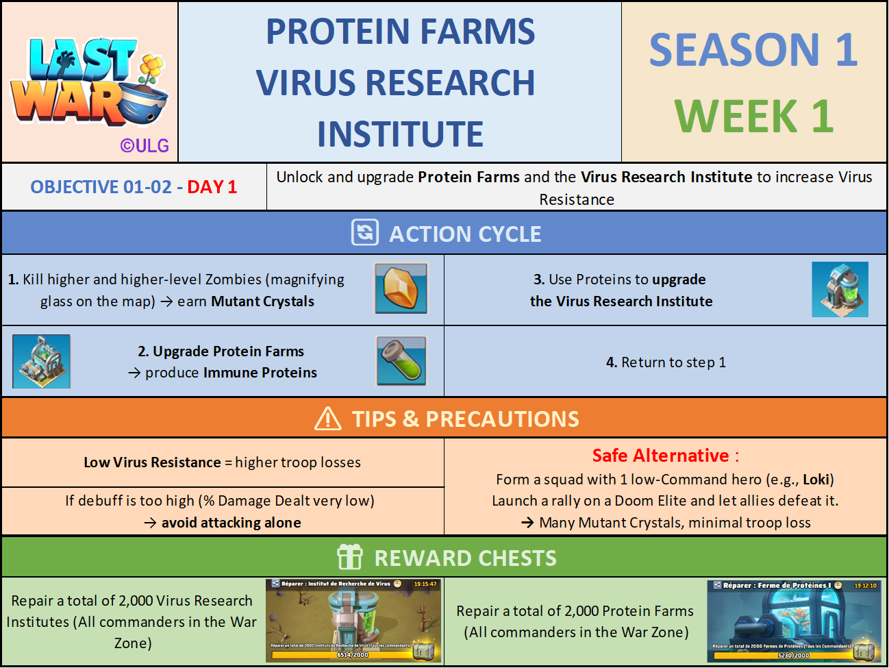
Ab Tag 1 gilt: Resistenz vor allem. Der Kreislauf ist einfach. Tötet immer höhere Zombies über das Lupen-Symbol auf der Karte und sammelt Mutant Crystals. Nutzt diese, um eure Protein-Farm zu upgraden, die dann Immune Proteins produziert. Mit den Proteinen levelt ihr das Virus Research Institute, das eure Resistenz erhöht. Danach könnt ihr stärkere Zombies angreifen, und der Kreislauf beginnt von vorne. Wichtig: Ist eure Resistenz zu niedrig, greift nicht allein an. Startet stattdessen eine Rally mit einem Low-Command-Helden wie Loki und lasst Verbündete den Elite erledigen.
💉 TAG 1: RESISTENZ HOCHZIEHEN – DER WICHTIGSTE KREISLAUF! 💉 Merkt euch diese 4 Schritte, das ist die ganze Season: 🔁 1️⃣ Höhere Zombies töten (Lupe 🔍 auf der Karte) → Mutant Crystals 💎 2️⃣ Protein-Farm upgraden → macht Immune Proteins 🥩 3️⃣ Proteine rein ins Virus Research Institute → Resistenz steigt 🧪 4️⃣ Jetzt stärkere Zombies möglich → zurück zu Schritt 1! ♻️ ⚠️ ACHTUNG: Ist eure Resistenz zu niedrig, verliert ihr HAUFENWEISE Truppen! 🆘 Dann NICHT allein angreifen! Squad mit Loki (Low-Command) + Rally auf einen Doom-Elite → Allys machen ihn platt → ihr kriegt Crystals fast ohne Verluste! 🤝 🎁 Gemeinsames Ziel: 2.000 Virus Research Institutes + 2.000 Protein-Farmen reparieren = Belohnungen für alle! Wer hier zuerst hochkommt, farmt zuerst die dicken Sachen! 🚀
Infizierte Zombies eliminieren und Strongholds sichern für bestes Einzel- und Allianz-Ranking.
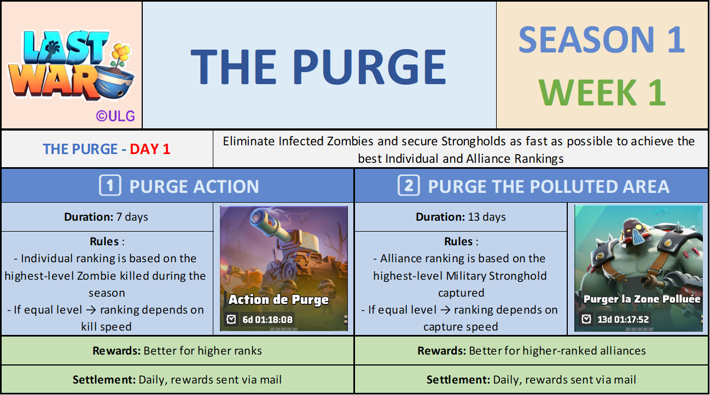
The Purge läuft ab Tag 1 über 7 Tage und hat zwei Teile. Im Einzel-Teil zählt der höchststufige Zombie, den ihr tötet. Bei gleichem Level entscheidet, wer schneller tötet, also nutzt eure Ausdauer gezielt. Im Allianz-Teil geht es um den höchststufigen Militär-Stronghold, den wir gemeinsam erobern. Bei Gleichstand gewinnt die Allianz, die schneller erobert. Bessere Ränge bringen bessere Belohnungen. Konzentriert euch also auf hohe Zombie-Level und koordinierte Stronghold-Einnahmen. Die Belohnungen kommen täglich per Mail.
🧟 THE PURGE – 7 TAGE, ZWEI RANKINGS, DICKE BELOHNUNGEN! 🧟 Läuft ab Tag 1 – hier holen wir uns Ränge! 🏆 👤 EINZEL (Purge Action): 🔹 Zählt: der höchststufige Zombie, den DU tötest! 🔹 Gleiches Level? → wer schneller tötet, gewinnt ⏱️ → Ausdauer clever einsetzen! 🏰 ALLIANZ (Purge the Polluted Area): 🔹 Zählt: unser höchststufiger eroberter Militär-Stronghold! 🔹 Gleichstand? → wer schneller erobert, gewinnt! → also KOORDINIERT ran! 🤝 🎁 Bessere Ränge = bessere Belohnungen (kommen täglich per Mail 📬) 👉 Fokus: höchste Zombies knacken + bei den Stronghold-Rallies mitfahren! Sagt Bescheid, wenn ihr einen Elite nicht allein schafft! 💪🔥
Genetic Research Project, Vorspiel zur Serum-Collection-Mission. Obj 03, Tag 2.
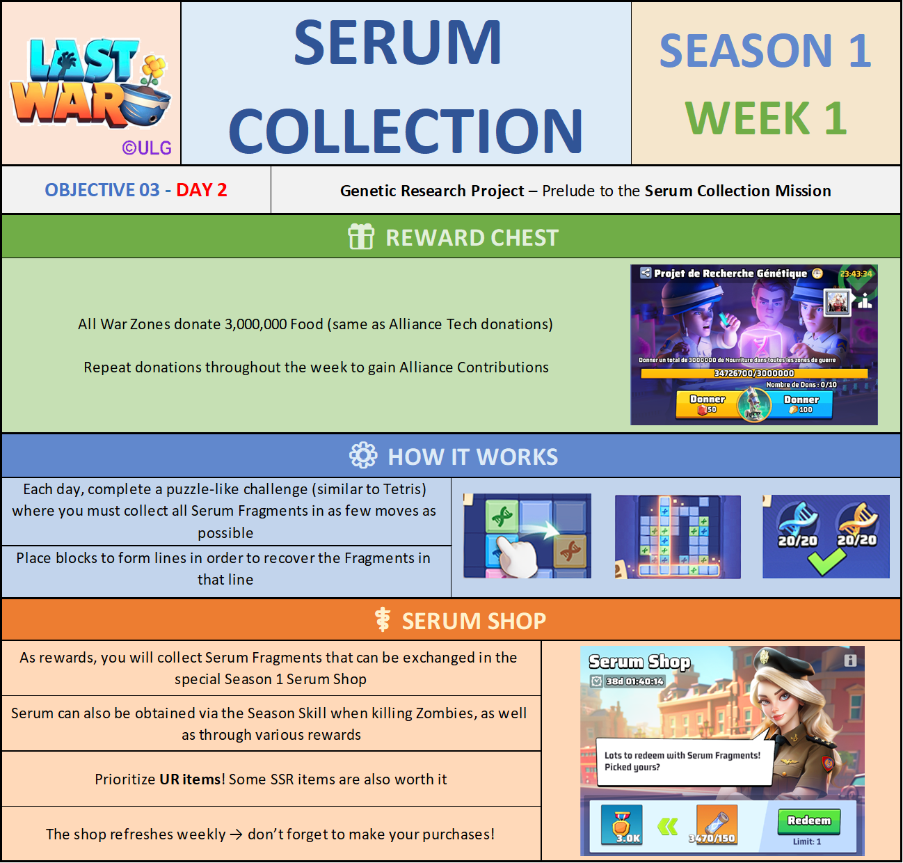
Ab Tag 2 läuft die Serum Collection. Als Allianz spenden alle War Zones 3 Millionen Food, das zählt wie Alliance-Tech-Spenden, also spendet die Woche über fleißig für unsere Beiträge. Täglich gibt es ein Puzzle ähnlich Tetris, bei dem ihr Serum-Fragmente in möglichst wenigen Zügen einsammelt, indem ihr Blöcke zu Linien legt. Die Fragmente tauscht ihr im speziellen Season-1-Serum-Shop ein. Serum bekommt ihr auch über den Season-Skill beim Zombie-Töten. Kauft zuerst UR-Items, manche SSR lohnen auch. Der Shop wird wöchentlich aufgefrischt.
🧬 SERUM COLLECTION – ab Tag 2! Gratis Beute + Allianz-Punkte! 🧬 So läuft's: 🍞 Allianz-Ziel: Alle War Zones spenden 3 Mio. Food → zählt wie Tech-Spenden! Also SPENDET die ganze Woche über! 🙌 🧩 Täglich ein Tetris-Puzzle: sammelt die Serum-Fragmente in möglichst WENIGEN Zügen ein (Blöcke zu Linien legen)! 🛒 Fragmente im Season-1-Serum-Shop eintauschen 💊 🧟 Bonus: Serum gibt's auch über den Season-Skill beim Zombie-Töten! 💡 TIPP: Zuerst UR-Items kaufen (manche SSR lohnen auch)! Der Shop refresht JEDE Woche 🔄 – nicht alles auf einmal raushauen, plant eure Käufe! Macht das Puzzle täglich – kostet nix und bringt richtig was! ✅💪
Der PvP-Kern. Städte gehören der Legion, erobert werden sie nur über angrenzende Strongholds.
| Zeit | Ziel-Objekt | Collective Goal |
|---|---|---|
| W1 Tag 1–3 | Lv.1-Städte ab Mi 12:00 | 80 Strongholds |
| W1 Tag 3–7 | Lv.2-Städte ab So 12:00 | 80 Lv.1-Städte |
| W2 Tag 1–3 | Lv.3-Städte ab Mi | 64 Lv.2-Städte |
| W2 Tag 3–7 | Lv.4-Städte ab So | 48 Lv.3-Städte |
| W3 Tag 1–3 | Lv.5-Städte ab Mi | 32 Lv.4-Städte |
| W3 Tag 3–7 | Lv.6-Städte ab So | 16 Lv.5-Städte |
| W4 Tag 5–7 | Lv.7-Städte ab So | 10 Strongholds in anderen War Zones |
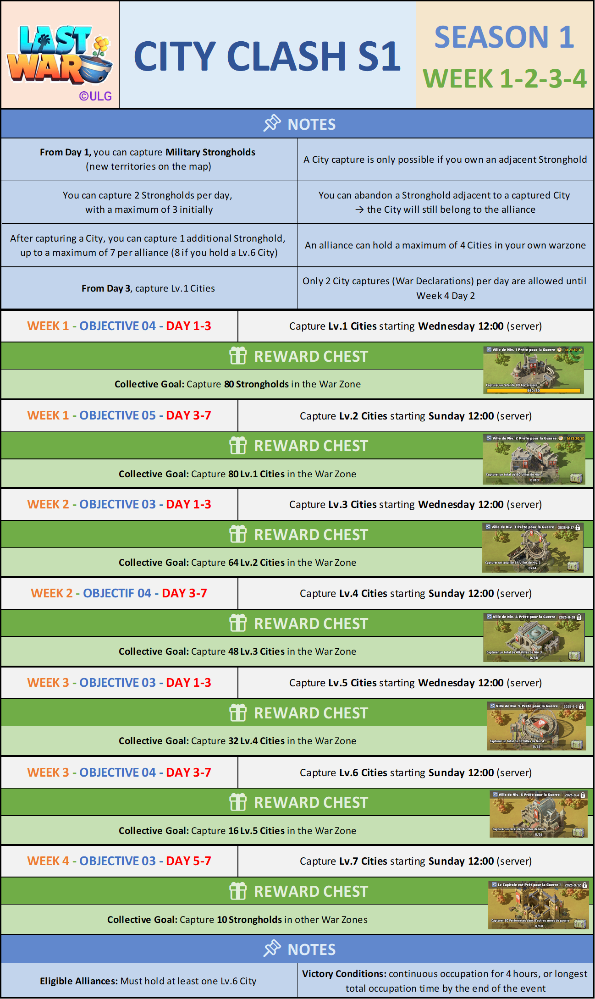
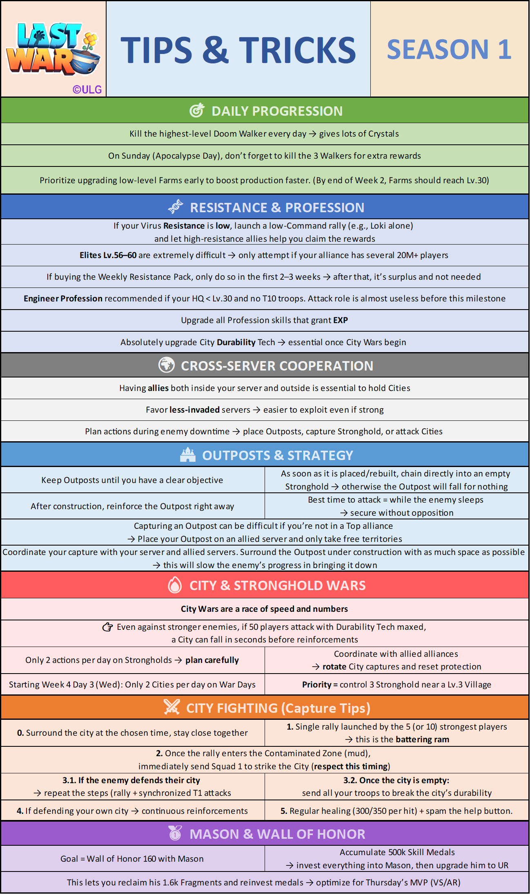
City Clash ist unser PvP-Kern. Merkt euch die Regeln: Ab Tag 1 nehmen wir Militär-Strongholds ein, maximal 2 pro Tag. Eine Stadt können wir nur erobern, wenn wir den angrenzenden Stronghold besitzen. Ab Tag 3 sind Lv.1-Städte dran, aber nur 2 Eroberungen pro Tag bis Woche 4. Jede Woche steigt das Ziel-Level der Städte. Zum Erobern umzingeln wir die Stadt eng und bleiben zusammen. Ist sie verteidigt, brechen die 5 bis 10 Stärksten als Rammbock durch. Heilt in Wellen und nutzt danach die Allianz-Hilfe. Baut vorher unbedingt die City-Durability-Tech aus.
🏰 CITY CLASH – SO HOLEN WIR STÄDTE! 🏰 📜 DIE REGELN (wichtig!): 🔹 Ab Tag 1: Strongholds einnehmen (max 2/Tag) 💪 🔹 Stadt geht NUR mit angrenzendem Stronghold! 🧱 🔹 Ab Tag 3: Lv.1-Städte, aber nur 2 Eroberungen/Tag bis Woche 4 ⏳ 🔹 Jede Woche steigt das Ziel-Level (Lv.1 → Lv.7) 📈 ⚔️ SO KNACKEN WIR EINE STADT: 1️⃣ Zur abgesprochenen Zeit ENG umzingeln, zusammenbleiben! 2️⃣ Verteidigt? → die 5–10 Stärksten als Rammbock 🐏 → Durability runter! 3️⃣ Leer? → ALLE Squads rein, Durability testen! 4️⃣ In Wellen à 300–950 heilen → dann Allianz-Hilfe drücken! 🏥 🛠️ PFLICHT VORHER: City-Durability-Tech ausbauen, sonst fällt unsere Stadt in Sekunden! 🎯 Ziel: 4 Std. durchgehend halten ODER längste Gesamtzeit! Mind. eine Lv.6-Stadt = wir sind dabei! Rally-Zeiten kommen – seid pünktlich! ⏰🔥
Ab Tag 4 der jeweiligen Woche: Kimberly „Rocket Shadow" (W1), DVA (W3/W6), Tesla (W6).
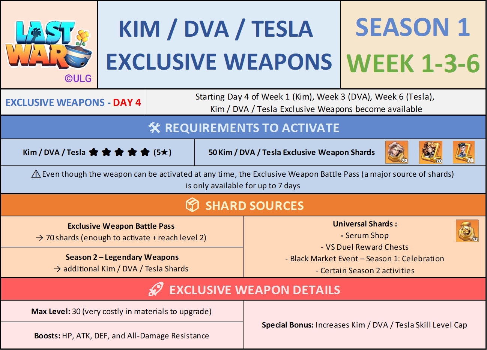
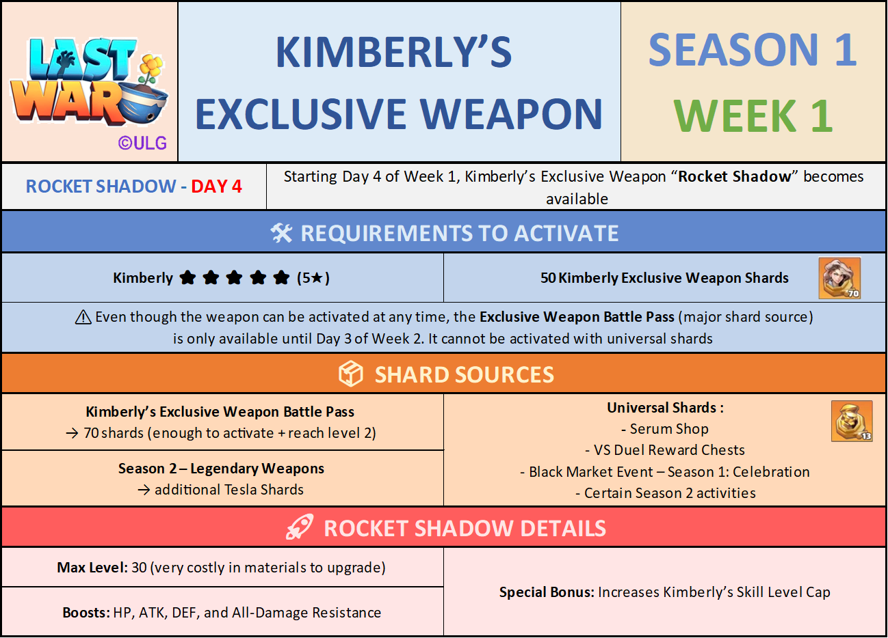
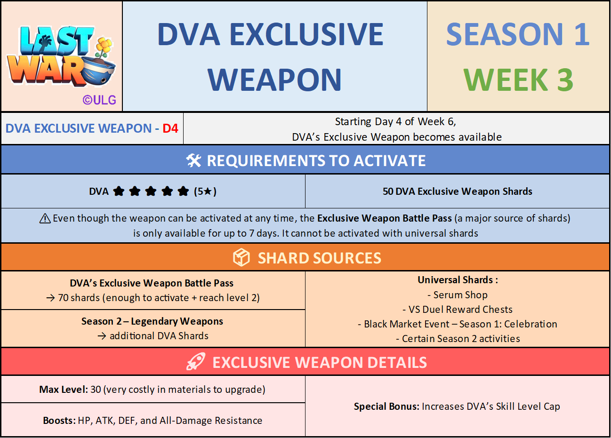
Die Exklusivwaffen kommen ab Tag 4 der jeweiligen Woche: Kimberlys Rocket Shadow in Woche 1, DVA in Woche 3 und Tesla in Woche 6. Zum Aktivieren braucht ihr den Helden auf 5 Sternen und 50 passende Weapon Shards. Die Waffe wirkt nur, solange der Held 5 Sterne hat. Shards bekommt ihr vor allem über den Exclusive Weapon Battle Pass, mit 70 Shards aktiviert ihr die Waffe und erreicht Level 2. Universal Shards gibt es im Serum-Shop, in VS-Duell-Truhen und im Black-Market-Event. Die Waffe geht bis Level 30 und boostet HP, ATK, DEF und Schadensresistenz.
🔫 EXKLUSIVWAFFEN: Kimberly, DVA & Tesla! 🔫 Ab Tag 4 der jeweiligen Woche verfügbar: 🗓️ Woche 1 → Kimberly „Rocket Shadow" 🗓️ Woche 3 → DVA 🗓️ Woche 6 → Tesla ✅ AKTIVIEREN: ⭐ Held auf 5 Sterne bringen 🧩 + 50 passende Weapon Shards ⚠️ Die Waffe wirkt NUR, solange der Held 5★ ist! 💰 SHARDS HOLEN: 🎟️ Exclusive Weapon Battle Pass (70 Shards = aktiviert + Level 2!) – bester Deal 🛒 Universal Shards: Serum-Shop, VS-Duell-Truhen, Black-Market-Event 📈 Waffe geht bis Level 30, boostet HP/ATK/DEF + Schadensresistenz und hebt das Skill-Cap des Helden! 💡 Wer auf Kimberly/DVA/Tesla setzt: Shards sammeln lohnt sich richtig! 🔥
Ab Tag 11 der Season kannst du einen Wunsch-Helden wählen.
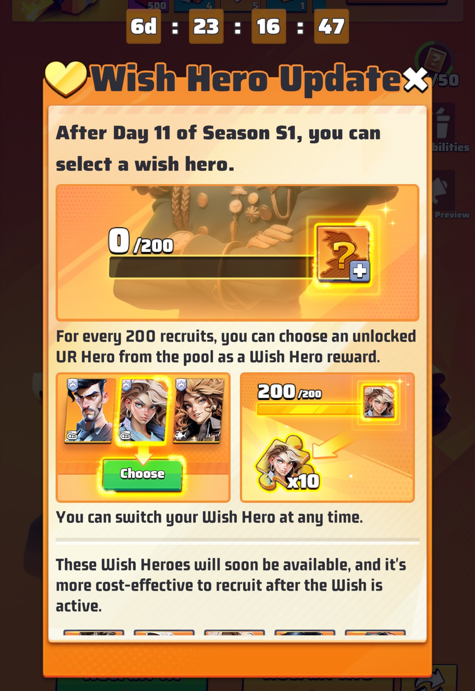
Ab Tag 11 der Season könnt ihr einen Wish Hero, also einen Wunsch-Helden, wählen. Für je 200 Rekrutierungen dürft ihr einen freigeschalteten UR-Helden aus dem Pool als Belohnung aussuchen. Euren Wish Hero könnt ihr jederzeit wechseln, falls ihr euch umentscheidet. Wichtig für eure Ressourcen: Das Rekrutieren ist deutlich kosteneffizienter, nachdem der Wish aktiv ist. Spart also eure Rekrutierungs-Tickets und startet gezielt erst nach Tag 11 durch, sobald ihr euren Wunsch-Helden festgelegt habt. So holt ihr das Maximum aus jeder Rekrutierung heraus.
⭐ WISH HERO – ab Tag 11! Spart eure Tickets! ⭐ 🎯 Ab Tag 11 könnt ihr einen WUNSCH-HELDEN wählen! 🔁 Für je 200 Rekrutierungen → 1 freigeschalteter UR-Held aus dem Pool, den IHR aussucht! 🔄 Jederzeit wechselbar – kein Stress bei der Wahl! 💡 SUPER WICHTIG FÜR EURE RESSOURCEN: Rekrutieren ist VIEL günstiger, NACHDEM der Wish aktiv ist! 💰 👉 Also: Rekrutierungs-Tickets JETZT sparen und erst nach Tag 11 loslegen, wenn ihr euren Wunsch-Helden festgelegt habt! Nicht vorher verpulvern – Geduld zahlt sich hier richtig aus! 🧠🔥
Mason von SSR (5★) zu UR-Legendary befördern, inkl. Armored Vehicle. Obj 01, D1.
| Thema | Detail |
|---|---|
| Voraussetzung | Legendary Hero Badge · Mason muss 5★ sein |
| Nach Beförderung | Mason kann via SSR-Universal/Mason-Fragmente zurück auf 5★ (1.600 Shards ab 5★). Skill-Medaillen frei umverteilbar. |
| Refunds | Shards fürs 5★-Anheben werden nicht erstattet · Wall-of-Honor-Fragmente werden als Mason-Shards erstattet · alle Skill-Medaillen erstattet |
| Reward Chest | Alle War Zones spenden 5.000.000 Coins (Alliance-Tech) |
| EXP Level Swap | Simultan-Event: 2 Helden tauschen EXP-Level, ideal, hohes Level auf Schlüsselheld zu übertragen |
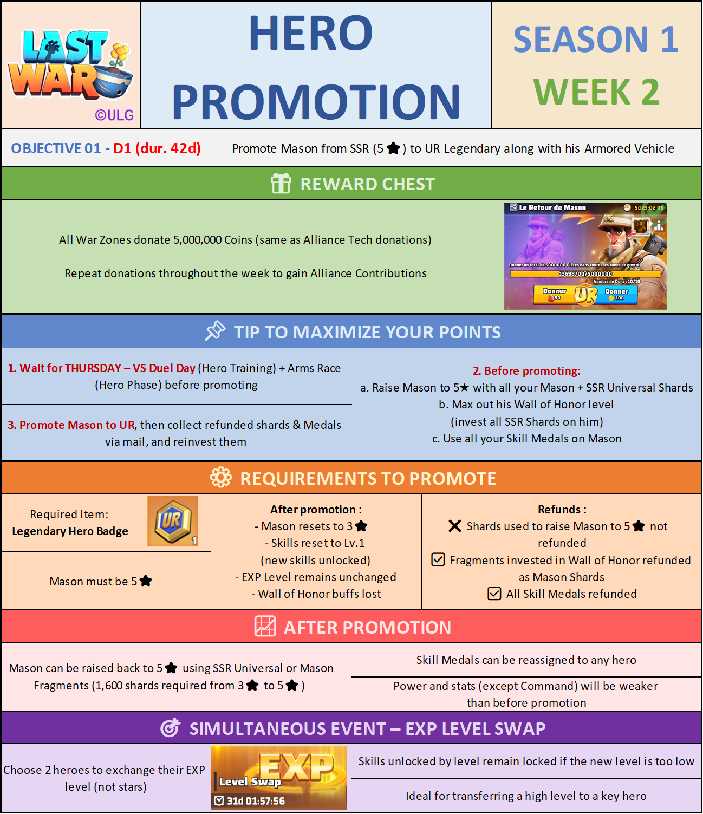
Ab Woche 2 läuft die Hero Promotion: Mason wird von SSR zu UR-Legendary befördert, inklusive Armored Vehicle. So holt ihr die meisten Punkte: Wartet mit der Beförderung bis Donnerstag, dem Hero-Tag im VS-Duell. Bringt Mason vorher auf 5 Sterne, maxt sein Wall-of-Honor-Level und legt alle Skill-Medaillen auf ihn. Nach der Beförderung bekommt ihr Wall-of-Honor-Fragmente und alle Skill-Medaillen per Mail zurück und könnt sie neu investieren. Die Shards fürs 5-Sterne-Anheben werden nicht erstattet. Voraussetzung ist ein Legendary Hero Badge und Mason auf 5 Sternen.
🦸 HERO PROMOTION: MASON SSR → UR! Timing = Punkte! 🦸 Ab Woche 2 könnt ihr Mason zu UR-Legendary machen (mit Armored Vehicle 🚗). ABER: Timing entscheidet über eure VS-Punkte! 🗓️ REGEL NR. 1: Erst am DONNERSTAG (Hero-Tag im VS-Duell) befördern! ⏰ Vorher vorbereiten: ⭐ Mason auf 5 Sterne + SSR-Universal-Shards 🏛️ Wall of Honor maxen (alle SSR-Shards auf Mason!) 🎖️ ALLE Skill-Medaillen auf Mason legen! ♻️ NACH der Beförderung: 📬 Ihr kriegt Wall-of-Honor-Fragmente + alle Skill-Medaillen ZURÜCK per Mail → neu investieren! ⚠️ ABER: Shards fürs 5★-Anheben gibt's NICHT zurück! 📋 Voraussetzung: Legendary Hero Badge + Mason auf 5★. 🎁 Allianz-Ziel: 5 Mio. Coins spenden! Sammelt eure Medaillen & Shards JETZT – und zündet Donnerstag! 💥
Allianz-Städte gegen wiederholte Angriffe der Crimson Legion verteidigen. Obj 02, D2.
| Thema | Detail |
|---|---|
| Reward Chest | 800 Cursed Elites eliminieren |
| Ablauf | Legion kündigt Ziele vorher an → Zeit zum Vorbereiten. Angriffe jeden Dienstag & Freitag. Erster Angriff Di 12:00 auf eure schwächste Stadt. |
| Angriffsprozess | Countdown → Ziel-Ankündigung, 12 h Vorlauf bis zur Schlacht. 30 Wellen, je 1 Min Abstand (~90 Min gesamt). Bis 20 Spieler können verstärken. Wellenstärke steigt mit jedem Angriff. |
| Richtwerte | Lv.2-Stadt 3,3–8,2M · Lv.3 11,8–21,2M · Lv.4 bis 26,4M · Lv.5 bis 29,3M |
| Ausgang | Sieg: Allianz-Belohnung, Verteidiger besser. Niederlage: Stadt nimmt Schaden; sinkt Durability auf 0 → Stadt verloren, verfällt zur Ruine, dann 7-Tage-Schutz. |
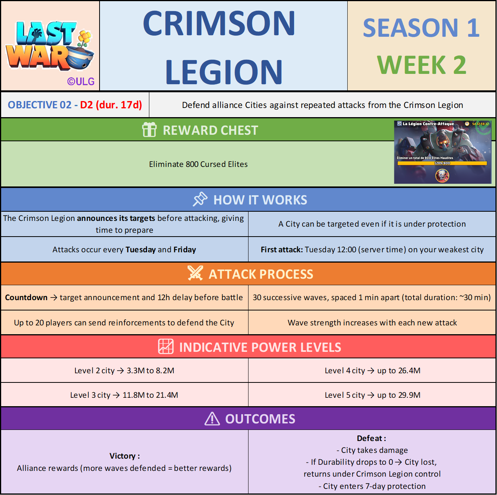
Ab Woche 2 greift die Crimson Legion unsere Städte an. Sie kündigt ihre Ziele vorher an, wir haben also Zeit zum Vorbereiten. Angriffe kommen jeden Dienstag und Freitag, der erste Dienstag um 12 Uhr auf unsere schwächste Stadt. Pro Angriff gibt es 30 Wellen im Minutentakt, das dauert rund 90 Minuten, und die Wellen werden stärker. Bis zu 20 Spieler können eine Stadt verstärken, also stationiert rechtzeitig Truppen. Verlieren wir und die Durability fällt auf null, geht die Stadt verloren und wird zur Ruine. Als Ziel müssen wir 800 Cursed Elites eliminieren.
🔴 CRIMSON LEGION GREIFT AN – STÄDTE VERTEIDIGEN! 🔴 Ab Woche 2 stürmt die Legion unsere Städte! Gute Nachricht: sie kündigt vorher an! 📢 📅 WANN: Jeden Dienstag & Freitag! Erster Angriff Di 12:00 auf unsere SCHWÄCHSTE Stadt! ⏱️ ABLAUF: Countdown → 12 Std. Vorlauf → dann 30 Wellen im Minutentakt (~90 Min), immer stärker! 📈 🛡️ Bis zu 20 Spieler können pro Stadt verstärken → RECHTZEITIG Truppen reinstellen! 💪 Richtwerte Wellenstärke: 🔹 Lv.2-Stadt: 3,3–8,2M 🔹 Lv.3-Stadt: 11,8–21,2M 🔹 Lv.4-Stadt: bis 26,4M 🔹 Lv.5-Stadt: bis 29,3M ⚠️ Verlieren = Stadt nimmt Schaden. Durability auf 0 → Stadt WEG (wird Ruine)! 💀 🎁 Ziel: 800 Cursed Elites eliminieren! Wenn eure Stadt drankommt: sofort Bescheid geben, wir verstärken gemeinsam! 🤝🔥
Die seasonalen Militärgebäude freischalten. Obj 01, D1.
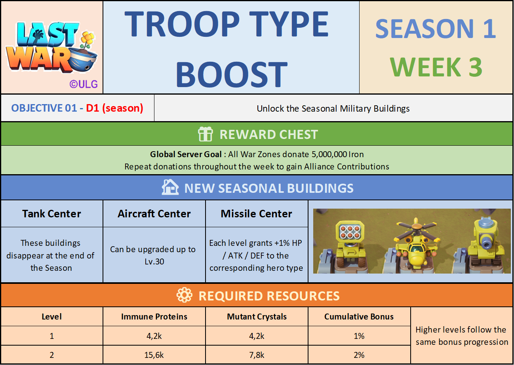
Ab Woche 3 schalten wir die seasonalen Militärgebäude frei: Tank Center, Aircraft Center und Missile Center. Jedes Gebäude boostet den passenden Helden-Typ und lässt sich bis Level 30 ausbauen, wobei jedes Level zwei Prozent mehr HP, Angriff und Verteidigung bringt. Für Level 1 braucht ihr 4200 Immune Proteins und 4200 Mutant Crystals, für Level 2 schon 15600 und 7800. Hebt die Gebäude, die zu euren Haupttruppen passen, gezielt an. Achtung: Diese Gebäude verschwinden am Ende der Season wieder. Als Allianz-Ziel spenden alle War Zones 5 Millionen Coins.
🏗️ TROOP TYPE BOOST – neue Militärgebäude ab Woche 3! 🏗️ Drei neue Season-Gebäude schalten frei: 🛡️ Tank Center ✈️ Aircraft Center 🚀 Missile Center 📈 Jedes Level: +2% HP/ATK/DEF für den passenden Helden-Typ – bis Level 30! 💡 TIPP: Levelt zuerst das Gebäude, das zu EUREN Haupttruppen passt! 🧱 Ressourcen: 🔹 Lv.1: 4,2k Immune Proteins + 4,2k Mutant Crystals 🔹 Lv.2: 15,6k + 7,8k 🔹 danach gleiche Progression ⚠️ Achtung: Diese Gebäude verschwinden am Season-Ende wieder – aber der Boost hilft uns JETZT in den Kriegen! 🎁 Allianz-Ziel: 5 Mio. Coins spenden! Baut clever – jeder Prozent zählt im City War! 💪🔥
Outposts in anderen War Zones platzieren, dort Strongholds & Städte erobern, Cross-Server-Angriffe starten. Obj 02, D1.
| Thema | Detail |
|---|---|
| Reward Chest | Ranking nach Cross-Server-Kills/Eroberungen · Shared Chest: 80 Strongholds in anderen War Zones |
| Platzierung | Nur R4/R5, in einer anderen Warzone. Einmal platziert nicht entfernbar. Erlaubt Eroberung des Strongholds, auf dem er steht (muss während der Eroberung gebaut bleiben). |
| Teleport | Freies Teleportieren zwischen War Zones, um vom Outpost anzugreifen. Outpost ist im Bau geschützt, danach direkt angreifbar (keine Rally nötig). Bei Zerstörung alle 24 h neu baubar. |
| Max | 4 Outposts |
| Kampfregeln | Nicht-Kriegstage (Mo–Fr + So): nur Contaminated Land + Cross-Server-Angriffe. Bis Woche 4: Tag 2 → nur Krieg/Strongholds, alle 2 Tage, 2/Tag. Ab Woche 4 Tag 3 → auch War Declarations, Mi & Sa, 2/Tag. |
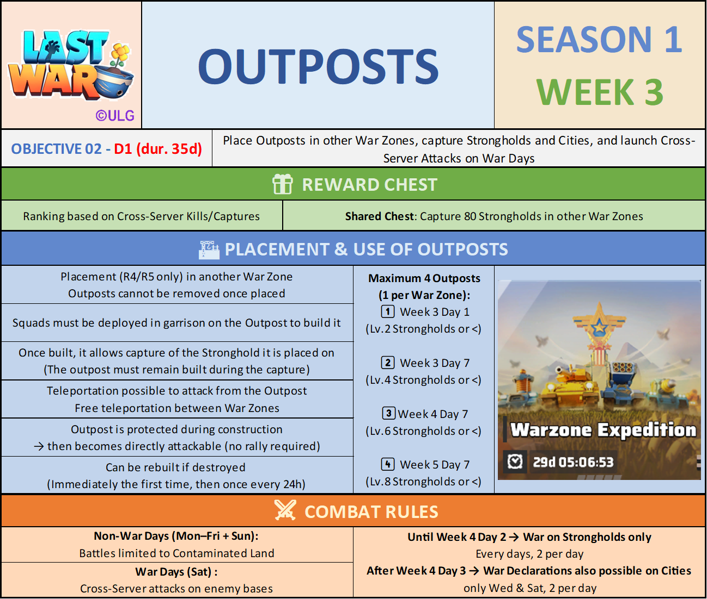
Ab Woche 3 kommen die Outposts für den Cross-Server-Krieg. Nur R4 und R5 können sie in anderen War Zones platzieren, und einmal gesetzt lassen sie sich nicht mehr entfernen. Ein Outpost erlaubt die Eroberung des Strongholds, auf dem er steht, und muss dabei gebaut bleiben. Von dort teleportiert ihr euch frei zwischen den War Zones, um anzugreifen. Wir können maximal 4 Outposts halten. An Nicht-Kriegstagen sind nur Contaminated Land und Cross-Server-Angriffe erlaubt. Als gemeinsames Ziel erobern wir 80 Strongholds in anderen War Zones. Sprecht die Platzierungen im Führungsteam ab.
🛰️ OUTPOSTS – Cross-Server-Krieg ab Woche 3! 🛰️ Jetzt greifen wir andere War Zones an! 🌍 📍 PLATZIERUNG: Nur R4/R5 setzen Outposts in fremde Warzones! ⚠️ Einmal gesetzt = NICHT mehr entfernbar → also gut absprechen! 🏰 Ein Outpost erlaubt die Eroberung des Strongholds, auf dem er steht (muss dabei gebaut bleiben!) 🚀 Von dort: FREIER Teleport zwischen War Zones zum Angreifen! 🔢 Max 4 Outposts gleichzeitig! 🔧 Zerstört? → alle 24 Std. neu baubar! ⚔️ KAMPFREGELN: 🔹 Nicht-Kriegstage (Mo–Fr + So): nur Contaminated Land + Cross-Server-Angriffe 🔹 Ab Woche 4: auch War Declarations (Mi & Sa) 🎁 Gemeinsames Ziel: 80 Strongholds in anderen War Zones! + Ranking nach Cross-Server-Kills! Führungsteam plant die Outpost-Spots – haltet euch bereit für Teleport-Angriffe! 🔥
Krieg erklären und Städte in anderen War Zones erobern. Obj 01, D1–3.
| Thema | Detail |
|---|---|
| Reward Chest | Collective Goal: 10.000.000 Influence Points durch Städte-Eroberungen in anderen War Zones |
| Kriegstage | Nur Mittwoch & Samstag · 1 War Declaration/Tag · 2 Stadt-Eroberungen/Tag (max 4 Städte in anderen Warzones) |
| Ziele | 1) City Defense durchbrechen · 2) City Durability zerstören |
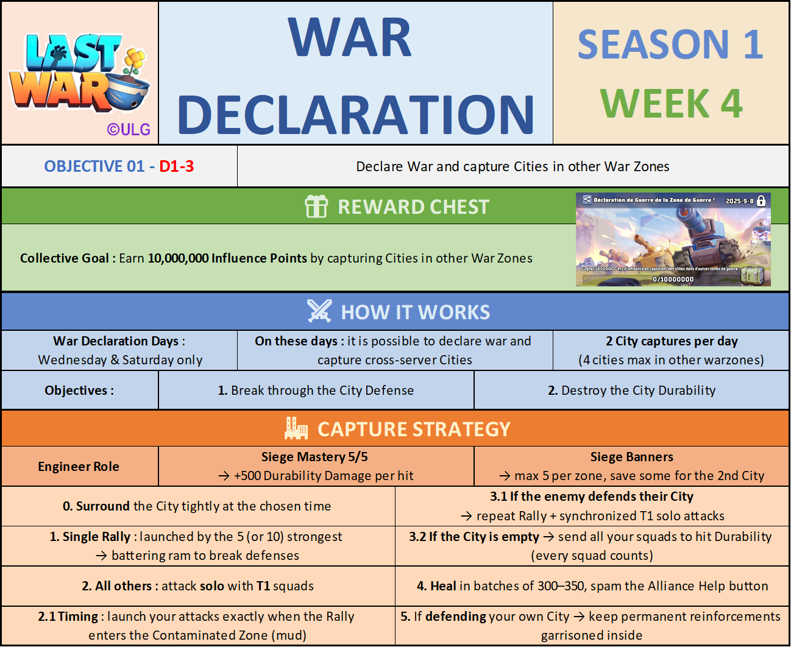
Ab Woche 4 erklären wir anderen War Zones den Krieg und erobern dort Städte. Kriegserklärungen sind nur Mittwoch und Samstag möglich, mit einer Erklärung und zwei Stadt-Eroberungen pro Tag. Zum Erobern brecht ihr zuerst die Stadtverteidigung durch und zerstört dann die Durability. Der Engineer mit Siege Mastery 5 gibt plus 500 Durability-Schaden pro Treffer, und Siege Banners solltet ihr teilweise für die zweite Stadt aufheben. Umzingelt die Stadt eng, schickt beim Betreten der Contaminated Zone sofort Squad 1 rein und heilt in Wellen. Gemeinsames Ziel sind 10 Millionen Influence Points.
⚔️ WAR DECLARATION – ab Woche 4 erobern wir fremde Städte! ⚔️ 📅 KRIEGSTAGE: NUR Mittwoch & Samstag! 🔹 1 Kriegserklärung/Tag 🔹 2 Stadt-Eroberungen/Tag (max 4 Städte in anderen Warzones) 🎯 SO GEHT'S: 1️⃣ City Defense durchbrechen 🛡️ 2️⃣ City Durability zerstören 💥 🏆 CAPTURE-STRATEGIE: 🔧 Engineer mit Siege Mastery 5/5 = +500 Durability-Schaden pro Treffer! 🚩 Siege Banners (max 5/Zone) – ein paar für die 2. Stadt aufheben! 1️⃣ Stadt ENG umzingeln 2️⃣ Sobald Rally die Contaminated Zone betritt → sofort Squad 1 auf die Stadt! 3️⃣ Verteidigt? → Rally + Rammbock wiederholen. Leer? → alle Squads zum Durability-Test! 4️⃣ In Wellen à 300–950 heilen → dann Allianz-Hilfe! 🏥 🎁 Gemeinsames Ziel: 10 Mio. Influence Points! Mi & Sa sind unsere Kriegstage – seid bereit! 🔥
Warzone-Duell-Turnier zwischen den 8 War Zones, Kampf ums Capitol.
| Thema | Detail |
|---|---|
| Reward Chest | Collective Goal: insgesamt 1.000.000 Einheiten von Commandern anderer War Zones eliminieren · zusätzlich 10.000.000 Influence Points durch Städte-Eroberungen |
| Ablauf | Turnier in 3 Runden, 1. Runde nach Warzone-Influence-Ranking (Stichtag: Mitternacht Sonntag Woche 4). Influence Points je Duell-Sieg. Ab Woche 5: 1 Runde/Woche. |
| Bonuspunkte | Nur Allianzen mit >1.000.000 Influence Points. 1 Sieg +250.000 · 2 Siege +500.000 · 3 Siege +1.500.000 |
| Ziel | Kampf um das Capitol (klassische Warzone-Duell-Regeln) |
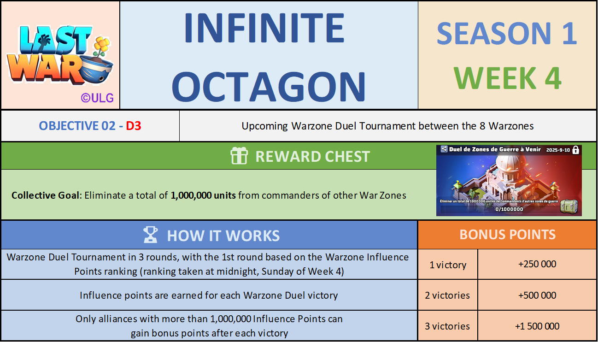
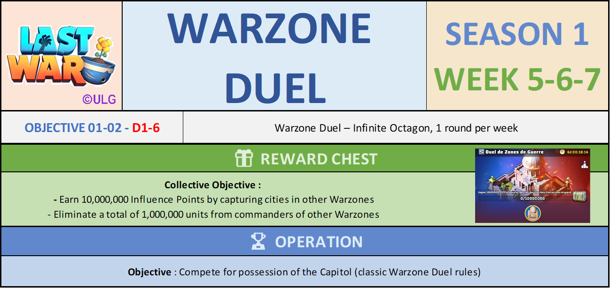
Ab Woche 4 startet das Infinite Octagon, das Warzone-Duell-Turnier zwischen den 8 War Zones. Es läuft über drei Runden, ab Woche 5 eine Runde pro Woche, und am Ende geht es um das Capitol. Die erste Runde richtet sich nach dem Warzone-Influence-Ranking, Stichtag ist Mitternacht am Sonntag der Woche 4. Sammelt bis dahin so viele Influence Points wie möglich durch Städte-Eroberungen. Nur Allianzen mit mehr als einer Million Influence Points bekommen Bonuspunkte: ein Sieg bringt 250000, zwei Siege 500000 und drei Siege 1,5 Millionen. Gemeinsam eliminieren wir eine Million gegnerische Einheiten.
🥊 INFINITE OCTAGON – WARZONE-DUELL UMS CAPITOL! 🥊 Ab Woche 4: unsere 8 War Zones treten gegeneinander an! Ziel am Ende: das CAPITOL! 🏛️ 🗓️ ABLAUF: 🔹 Turnier in 3 Runden (ab Woche 5: 1 Runde/Woche) 🔹 Runde 1 nach Warzone-Influence-Ranking ⏰ STICHTAG: Mitternacht Sonntag, Woche 4! → bis dahin so viele Influence Points wie möglich sammeln (durch Städte-Eroberungen)! 🏆 BONUSPUNKTE (nur ab 1 Mio. Influence Points!): ✅ 1 Sieg → +250.000 ✅✅ 2 Siege → +500.000 ✅✅✅ 3 Siege → +1.500.000 🎁 Gemeinsames Ziel: 1.000.000 gegnerische Einheiten eliminieren! 👉 JEDER Stadt-Kill vor dem Sonntag zählt fürs Ranking – gebt Gas! 💪🔥
Eine Builder Alliance gibt ihr Influence-Ranking auf und entwickelt stattdessen Städte über Facilities, die Durability & Boni geben. Grundsatzentscheidung des Führungsteams!
| Facility | Effekt |
|---|---|
| Factories (Iron/Food/Coins) | Stündliche Produktion |
| Depots (Gathering/Engineering/Research) | +10 % Geschwindigkeit (Sammeln/Bau/Forschung) |
| Training Center | +5 % Trainingsgeschwindigkeit |
| Medical Center | −5 % PvP-Truppenverluste |
| Radar Station | +5 % Hero DEF |
| Armory | +5 % Hero ATK |
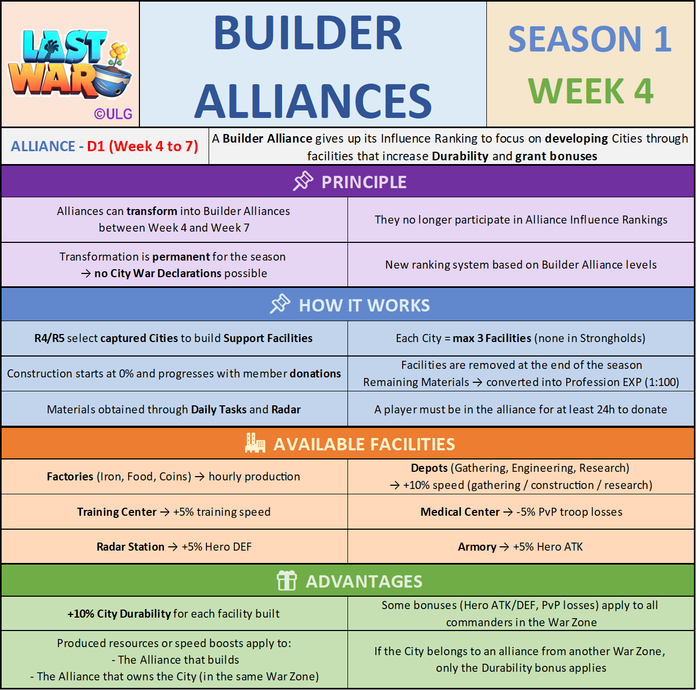
Zwischen Woche 4 und 7 können wir uns in eine Builder Alliance umwandeln. Das ist eine große Entscheidung: Wir geben unser Influence-Ranking und alle City-War-Erklärungen dauerhaft für die Season auf und entwickeln stattdessen unsere Städte über Facilities. Jede Facility gibt plus 10 Prozent City Durability, dazu Boni wie plus 5 Prozent Hero-Angriff oder minus 5 Prozent PvP-Verluste, teils für die ganze War Zone. R4 und R5 wählen die Städte, maximal drei Facilities pro Stadt, und der Bau steigt mit euren Spenden. Das Führungsteam entscheidet, ob dieser Weg zu uns passt.
🏗️ BUILDER ALLIANCE – große Weichenstellung (Woche 4–7)! 🏗️ Wir können uns in eine BUILDER ALLIANCE umwandeln – aber Achtung, das ist PERMANENT für die Season! ⚠️ 🔀 Was ändert sich? ❌ Kein Influence-Ranking mehr ❌ Keine City-War-Erklärungen mehr ✅ Stattdessen: Städte mit Facilities aufbauen → neues Builder-Ranking! 🏭 FACILITIES & BONI (je +10% City Durability!): 🔹 Factories → Iron/Food/Coins pro Stunde 🔹 Depots → +10% Sammeln/Bau/Forschung 🔹 Training Center → +5% Training 🔹 Medical Center → −5% PvP-Verluste 🔹 Radar Station → +5% Hero DEF 🔹 Armory → +5% Hero ATK (manche Boni gelten für die ganze War Zone! 🌍) 🛠️ R4/R5 wählen die Städte (max 3 Facilities/Stadt). Bau steigt mit EUREN Spenden – ab 24 Std. Mitgliedschaft spendbar! 👉 Das Führungsteam bespricht, ob wir diesen Weg gehen. Sagt eure Meinung! 💬🔥
Berufswahl bestimmt euren Fokus. Season-Skills starten zu Season-Beginn und werden am Ende zurückgesetzt (Punkte erstattet). Max-Level S1 = 40.
| Quelle | Wert |
|---|---|
| Seasonale Gebäude upgraden | ★★★★ |
| Militär-Strongholds angreifen · Season Pass | ★★★ |
| Städte / Verteidiger angreifen · Zombies & Cursed Elites · EXP-Packs | ★★ |
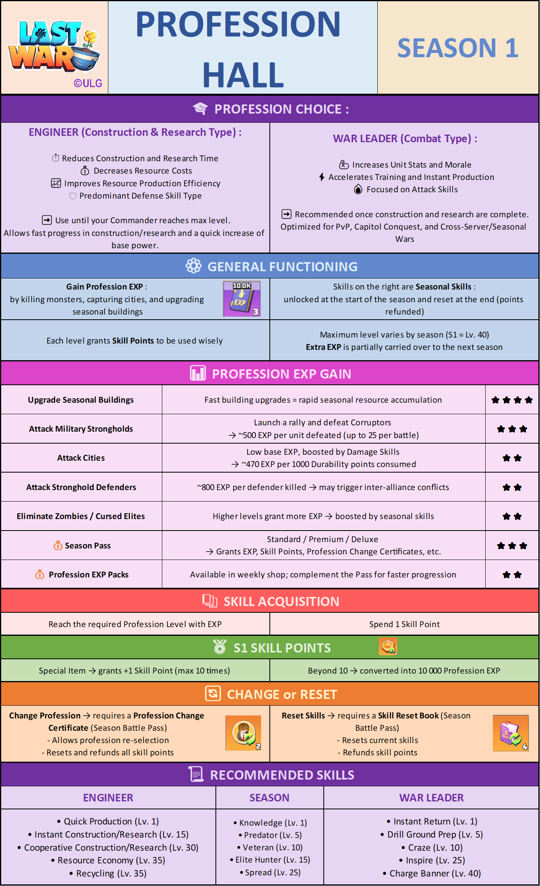
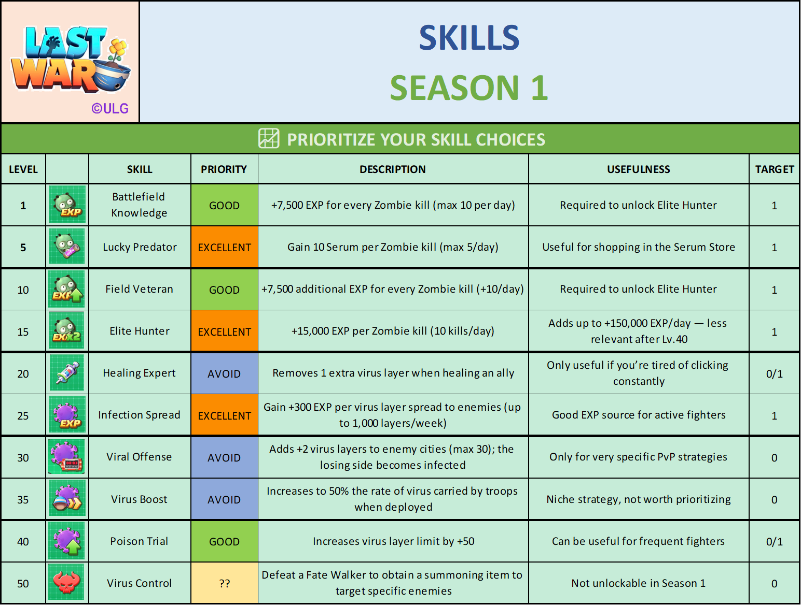
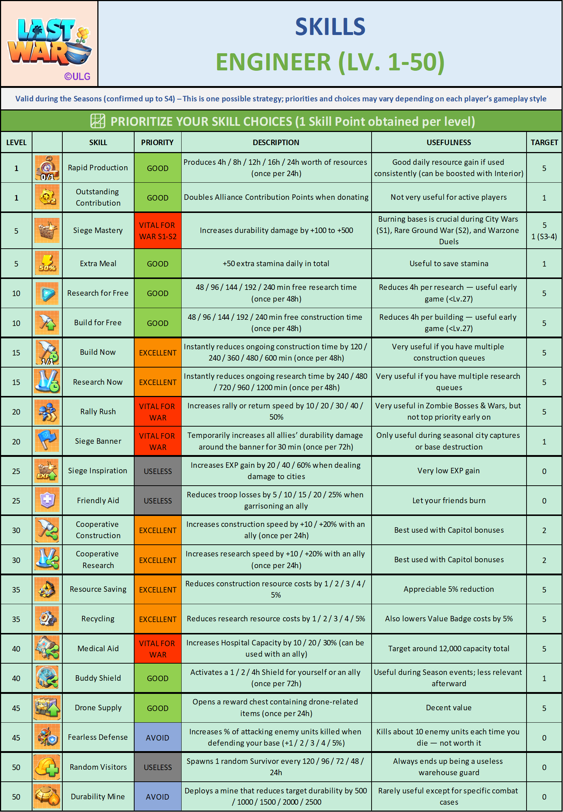
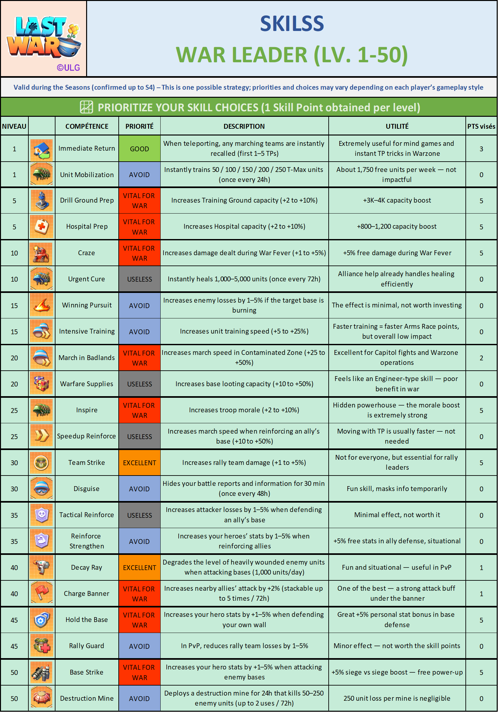
Weitere Skill-Details: Bild 25 (Engineer 55–100) · Bild 27 (War Leader 55–100), als Referenz im Ordner.
Die Profession Hall bestimmt euren Fokus. Wählt Engineer, wenn euer HQ noch unter Level 30 ist oder ihr keine T10-Truppen habt, denn das spart Bau- und Forschungszeit. Wählt War Leader, wenn Bau und Forschung weitgehend fertig sind, denn das stärkt Angriff und PvP. Season-Skills starten zu Beginn und werden am Ende zurückgesetzt, die Punkte bekommt ihr erstattet. Das Maximallevel in Season 1 ist 40. Am meisten EXP bringt das Upgraden seasonaler Gebäude, gefolgt von Strongholds und Städten. Priorisiert bei den Season-Skills Lucky Predator, Field Veteran und Elite Hunter.
🎓 PROFESSION HALL & SKILLS – richtig wählen! 🎓 Euer Beruf entscheidet euren Fokus: 🔧 ENGINEER (Bau): weniger Bau-/Forschungszeit, mehr Ressourcen → nehmen, wenn HQ < Lv.30 oder keine T10-Truppen! ⚔️ WAR LEADER (Kampf): mehr Angriff, Moral, schnelleres Training → nehmen, wenn Bau/Forschung fertig ist! 📊 SO KRIEGT IHR EXP (am meisten oben): ⭐⭐⭐⭐ Season-Gebäude upgraden ⭐⭐⭐ Strongholds angreifen + Season Pass ⭐⭐ Städte, Zombies & Cursed Elites ✅ SEASON-SKILLS – DAS LOHNT SICH: 🔥 Lucky Predator (Lv.5) → +10 Serum pro Kill! 🔥 Field Veteran (Lv.10) & Elite Hunter (Lv.15) → bis +150k EXP/Tag! 👍 Battlefield Knowledge (1), Infection Spread (25), Poison Trial (40) 🚫 Finger weg von: Healing Expert, Viral Offense, Virus Boost (Nische!) 💡 Season-Skills werden am Ende resettet – Punkte kriegt ihr zurück! Max-Level S1 = 40. Fragt, wenn ihr bei der Berufswahl unsicher seid! 💪
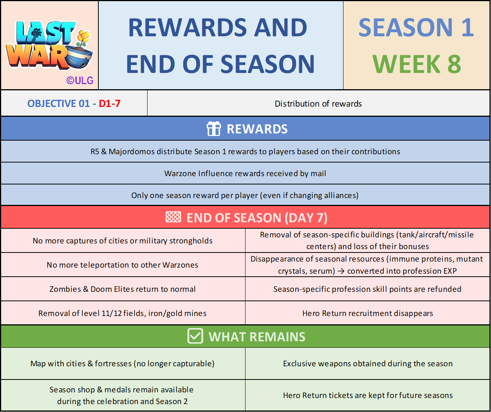
In Woche 8 endet die Season, die Belohnungen werden am Tag 7 verteilt. RS und Majordomos verteilen die Season-1-Belohnungen nach eurem Beitrag, die Warzone-Influence-Belohnung kommt per Mail. Es gibt nur eine Season-Belohnung pro Spieler, auch bei einem Allianzwechsel. Zum Ende sind keine Eroberungen und Teleports mehr möglich, die Season-Gebäude und ihre Boni verschwinden, und Season-Ressourcen werden in Profession-EXP umgewandelt. Gebt eure Proteine, Crystals und Serum also rechtzeitig aus. Eure Exklusivwaffen, der Season-Shop und die Medaillen bleiben euch erhalten.
🏁 SEASON-ENDE (Woche 8) – letzte Chance, alles rauszuholen! 🏁 🎁 BELOHNUNGEN (Tag 7): 🔹 RS & Majordomos verteilen nach eurem BEITRAG → also bis zuletzt aktiv bleiben! 🔹 Warzone-Influence kommt per Mail 📬 ⚠️ Nur EINE Season-Belohnung pro Spieler – auch bei Allianzwechsel! 🚫 WAS VERSCHWINDET: ❌ Keine Eroberungen/Teleports mehr ❌ Season-Gebäude (Tank/Aircraft/Missile) + Boni weg ❌ Proteine, Crystals, Serum → werden zu Profession-EXP umgewandelt! ❌ Hero-Return-Rekrutierung weg ⏳ DESHALB JETZT: Gebt eure Season-Ressourcen & Serum-Fragmente RECHTZEITIG aus – nichts verfallen lassen! 🛒 ✅ WAS BLEIBT: 💪 Eure Exklusivwaffen! 🛒 Season-Shop & Medaillen (auch in Season 2 nutzbar) 🎟️ Hero-Return-Tickets für künftige Seasons! Starkes Finish, Leute – gebt nochmal alles! 🔥🏆
Pro Woche eine Allianz-Mail mit allen Infos, intern gegliedert in Wochenanfang · Mitte · Ende. Jede Woche steht hier mit ihrer Sammel-Mail am Ende der Woche, kopieren, [Zeiten] & [Ziele] eintragen, posten.
🦠 WOCHE 1, SEASON-START „CRIMSON PLAGUE"! 🦠 📌 WOCHENANFANG (Tag 1): 🔁 Resistenz-Kreislauf SOFORT starten: höhere Zombies (Lupe 🔍) → Mutant Crystals → Protein-Farm → Immune Proteins → Virus Research Institute! 🧟 The Purge läuft (7 Tage): höchststufige Zombies töten + Militär-Strongholds erobern (max 2/Tag)! ⚠️ IMMER erst Resistenz prüfen, bevor ihr angreift – sonst Truppenverlust! Zu niedrig? Loki-Rally + Allys! 📌 WOCHENMITTE (ab Tag 2–3): 🧬 Serum Collection: tägliches Puzzle 🧩 + Fragmente im Serum-Shop (zuerst UR)! Allianz-Ziel: 3 Mio. Food spenden 🍞 🏰 City Clash ab Tag 3: Lv.1-Städte (nur neben eigenem Stronghold), max 2 Eroberungen/Tag! 🛠️ PFLICHT: City-Durability-Tech ausbauen, bevor die Wars starten! 📌 WOCHENENDE (ab Tag 4): 🔫 Kimberly „Rocket Shadow" Exklusivwaffe: Held 5★ + 50 Shards! 🌦️ Wetter (ab Tag 3): ☀️Sunny=farmen · 🌧️Light Rain=riskante Elites · ☢️Acid Rain=keine Rally/PvP! Monica-Vorhersage checken! 🎯 Wochenziel: [80 Strongholds / 80 Lv.1-Städte] Fragt lieber einmal zu viel! 💪🔥
🔴 WOCHE 2, MASON & CRIMSON LEGION! 🔴 📌 WOCHENANFANG: 🦸 Mason Hero Promotion (SSR→UR) startet – JETZT vorbereiten: Mason 5★, Wall of Honor maxen, ALLE Skill-Medaillen auf Mason! ⏰ ABER: erst DONNERSTAG (VS Hero-Tag) befördern = maximale Punkte! Allianz-Ziel: 5 Mio. Coins. 📌 WOCHENMITTE: 🏰 Crimson Legion greift an! Angriffe Di & Fr, erster Di 12:00 auf unsere SCHWÄCHSTE Stadt! ⏱️ 30 Wellen (~90 Min), immer stärker – bis 20 Spieler verstärken → rechtzeitig Truppen reinstellen! 🎁 Ziel: 800 Cursed Elites eliminieren. Verlieren = Stadt nimmt Schaden (Durability 0 → weg)! 📌 WOCHENENDE: 💥 DONNERSTAG Mason zünden – dann Medaillen/Fragmente per Mail zurück & neu investieren! 🏙️ City Clash: Lv.3 & Lv.4-Städte dran! 🎯 [Rally-Zeiten eintragen] Wenn eure Stadt drankommt: sofort Bescheid geben! 🤝🔥
🛰️ WOCHE 3, TRUPPEN-BOOST & CROSS-SERVER! 🛰️ 📌 WOCHENANFANG: 🏗️ Troop Type Boost: Tank/Aircraft/Missile Center bauen (bis Lv.30, +2%/Level HP/ATK/DEF)! Zuerst das Gebäude für EURE Haupttruppen! Allianz-Ziel: 5 Mio. Coins. ⭐ Ab Tag 11: Wish Hero – Rekrut-Tickets sparen, gezielt rekrutieren (günstiger, wenn Wish aktiv)! 📌 WOCHENMITTE: 📍 Outposts (Cross-Server): nur R4/R5 platzieren in fremde Warzones – PERMANENT, max 4! Freier Teleport zum Angreifen 🚀 🎁 Ziel: 80 Strongholds in anderen War Zones! Führungsteam plant die Spots. 📌 WOCHENENDE: 🔫 DVA Exklusivwaffe verfügbar (Held 5★ + Shards)! 🏙️ City Clash: Lv.5 & Lv.6-Städte! Wetter weiter timen 🌦️ 🎯 [Ziele eintragen] Haltet euch bereit für Teleport-Angriffe! 🔥
⚔️ WOCHE 4, KRIEGSERKLÄRUNGEN & WEICHENSTELLUNG! ⚔️ 📌 WOCHENANFANG: 🗡️ War Declaration: fremde Städte erobern – NUR Mi & Sa! 1 Erklärung + 2 Eroberungen/Tag. 🔧 Engineer Siege Mastery 5/5 (+500 Durability/Treffer), 🚩 Siege Banners für die 2. Stadt aufheben! Ziel: 10 Mio. Influence Points. 📌 WOCHENMITTE: 🥊 Infinite Octagon startet (Warzone-Duell ums Capitol)! ⏰ STICHTAG Influence-Ranking: MITTERNACHT SONNTAG! Bis dahin max. Influence durch Städte-Eroberungen! Bonuspunkte ab 1 Mio. Influence. 📌 WOCHENENDE: 🏗️ BUILDER-ALLIANCE-ENTSCHEIDUNG (Fenster W4–W7, PERMANENT!): Influence-Ranking + City Wars aufgeben für Facility-Aufbau (+10% Durability je Facility). Führungsteam entscheidet – sagt eure Meinung! 💬 🏙️ City Clash: Lv.7-Städte! Mi & Sa = Kriegstage. Seid bereit! 🔥
🥊 WOCHE 5, WARZONE DUEL LÄUFT! 🥊 📌 WOCHENANFANG: 🏛️ Warzone Duel Runde (1 Runde/Woche) – Kampf ums Capitol! Influence sammeln, Duell-Siege holen! ✅ Bonus: 1 Sieg +250k · 2 Siege +500k · 3 Siege +1,5 Mio (nur ab 1 Mio. Influence)! 📌 WOCHENMITTE: ⚔️ War Declaration weiter NUR Mi & Sa – fremde Städte + Cross-Server-Kills fürs Ranking! Outposts nutzen 🛰️ 🎁 Ziel: 1 Mio. gegnerische Einheiten eliminieren! 📌 WOCHENENDE: 🏗️ Builder-Fenster läuft noch (bis W7) – falls geplant, Facility-Spenden koordinieren! 🏛️ Capitol wird erst 28 Tage nach City-Battle-Start eroberbar – Vorbereitung läuft! 🎯 [Duell-Zeiten eintragen] Jeder Kill zählt fürs Ranking! 💪🔥
⚡ WOCHE 6, TESLA & NÄCHSTE DUELL-RUNDE! ⚡ 📌 WOCHENANFANG: 🔫 Tesla Exklusivwaffe verfügbar (Held 5★ + Shards)! Shards über Battle Pass, Serum-Shop, VS-Truhen! 🥊 Warzone Duel: nächste Runde ums Capitol – Influence + Duell-Siege pushen! 📌 WOCHENMITTE: ⚔️ War Declaration weiter Mi & Sa – Influence + Cross-Server-Kills hochhalten! 🎯 [Ziele eintragen] 📌 WOCHENENDE: 🏗️ Builder-Fenster schließt bald (nächste Woche letzte Chance in W7)! Jetzt entscheiden, falls noch offen! 🏛️ Capitol-Push vorbereiten – koordiniert bleiben! Vollgas Richtung Capitol! 🔥🏛️
🏛️ WOCHE 7, KAMPF UMS CAPITOL! 🏛️ 📌 WOCHENANFANG: 🥊 Letzte Warzone-Duell-Runde ums Capitol – ALLES auf Influence + Duell-Siege! 🏛️ Capitol ist jetzt eroberbar (28 Tage nach City-Battle-Start) – koordinierter Push, alle bereithalten! 📌 WOCHENMITTE: ⚠️ BUILDER-ALLIANCE-FENSTER SCHLIESST diese Woche – LETZTE Chance zur Umwandlung! Führungsteam final entscheiden! 📌 WOCHENENDE: 🛒 Ressourcen-Check: Serum-Fragmente, Proteine & Crystals langsam ausgeben – werden am Season-Ende nur zu Profession-EXP! 🎯 [Capitol-Rally-Zeiten eintragen] Endspurt – holt euch das Capitol! 💪🔥
🏁 WOCHE 8, FINALE & SEASON-ENDE! 🏁 📌 WOCHENANFANG: 🏆 Letzte Woche – bis zuletzt aktiv bleiben! Belohnungen nach BEITRAG (RS/Majordomos). Letzte Eroberungen & Duelle mitnehmen! 📌 WOCHENMITTE: 🛒 Season-Ressourcen JETZT ausgeben: Serum-Fragmente, Proteine, Crystals, Serum-Shop – sonst verfallen sie zu Profession-EXP! ⚠️ Nur EINE Season-Belohnung pro Spieler – auch bei Allianzwechsel! 📌 WOCHENENDE (Tag 7): 🚫 Season-Ende: keine Eroberungen/Teleports mehr, Season-Gebäude + Boni verschwinden! ✅ Was BLEIBT: Exklusivwaffen 💪, Season-Shop & Medaillen 🛒, Hero-Return-Tickets 🎟️! Belohnungen kommen per Mail 📬 Starkes Finish, Leute – gebt nochmal alles! 🔥🏆
Unlock order of the season events. Each week's roundup mail sits in its own week, tap a card to jump to the topic.
The permanent mechanics that matter all season. Tap to jump to the detailed section.
Season 1 "Crimson Plague" is starting. The server map is completely new: bigger, with infected villages, strongholds and the Capitol as the City of Apocalypse. At the start all cities belong to the Lady in Red Legion. We start at the map edge in our hive, with no city ownership. The goal is to retake cities. The path there always runs through the strongholds right next to the cities. Warning: most zombies are now infectious and can infect our troops. Preparation is what decides.
🦠 SEASON 1 IS HERE – "CRIMSON PLAGUE"! 🦠 Everyone, everything has changed! 🗺️ The map is completely new, bigger and full of new creatures. Cities, infected villages, strongholds – and the Capitol is now the "City of Apocalypse". 😱 👉 Important at the start: 🔴 All cities belong to the Lady in Red Legion – we start with ZERO city ownership at the edge, in our hive. 🏰 To take a city we ALWAYS need the stronghold right next to it first. 🏛️ The Capitol can only be captured 28 days after city battles start – patience! 🧟 Almost all zombies infect now. Without resistance we lose troops. Get ready, we'll pull this off together! 💪🔥
The heart of the season. Fights against certain enemies infect your troops. If the Virus Research Institute isn't high enough, virus stacks (0–100) pile up, the more, the harsher the debuffs.
If the zombie level is higher than your virus resistance, your damage drops massively. Example from the guide: needs 6,800 resistance, you have 4,200 → −96% damage. Check the required resistance before every attack.
Zombies now have types: Tank / Aircraft / Missile. Adjust troop composition to maximize damage and cut losses.
| Threshold | Debuff | Effect |
|---|---|---|
| 1 | Hospital Stay | 1 severely wounded unit every 300–200s |
| 20 | Morale is Low | −4% to −20% damage dealt |
| 40 | Fatal Virus | +4% to +10% own losses |
| 60 | Virus Plague | 6–10% chance to lose the enemy even on a win |
| 100 | Virus Blast | After a 30s countdown the base explodes, infects at random, including neighboring bases. Max 100 stacks = all debuffs at once. |
The RA virus is the core mechanic of the season. Fights against certain enemies infect your troops. If your Virus Research Institute is too low, virus stacks pile up from 0 to 100 and the debuffs get harsher: from level 20 your damage drops, from 40 losses rise, from 60 you can lose enemies despite a win, at 100 the base explodes. Check the required resistance before every attack. If it is too low, do not attack alone; request cures in chat or start a rally with an ally who has higher resistance.
🦠 THE RA VIRUS – READ THIS OR YOU'LL LOSE TROOPS! 🦠 Fights against infected enemies infect your troops. 🧟 If your Virus Research Institute is too low, VIRUS STACKS (0–100) pile up – and they wreck you: 🔸 From 20 → less damage 📉 🔸 From 40 → more own losses 💀 🔸 From 60 → you lose enemies even on a win 😵 🔸 At 100 → BOOM, base explodes and infects neighbors! 💥 ✅ HOW TO SURVIVE: 🔍 ALWAYS check the required resistance before you attack! 🆘 Too low? DON'T attack alone – request a cure in chat! ✈️ 🤝 Start a rally with an ally who has more resistance – their resistance applies to the whole rally! 🧑✈️ Trick: squad with a low-command hero (e.g. Loki) + rally on an elite, let allies finish it = barely any losses! ⚠️ Beware auto-rally: send troops onto bases so you don't get pulled into others' offline rallies! Ask once too often rather than once too little! 💪
First 2 days always Cloudy, from Day 3 random weather, changing every 30 min to 8 h. Monica predicts 3 possible weathers with their probability.
| Weather | Effect |
|---|---|
| Acid Rain | Periodically adds virus stacks to all bases in the war zone, avoid attacks & PvP if possible |
| Sunny | +30% Profession EXP when killing monsters |
| Foggy / Brumeux | Monsters start with +2 virus stacks |
| Rainbow | All commanders get regular Profession EXP |
| Windy | March speed −30% (plan rallies/reinforcements) |
| Light Rain | Troops take no virus stacks → ideal for risky elite/zombie attacks |
| Cloudy | Neutral, no effect |
The weather drives your tactics this season. The first two days it is cloudy, from Day 3 it changes randomly every 30 minutes to 8 hours. Monica predicts three possible weathers with their probability, use that to plan. Remember: on Sunny there is plus 30 percent Profession EXP from monsters, so farm then. On Light Rain troops take no virus stacks, ideal for dangerous elite attacks. On Acid Rain all bases gain virus stacks, so no rallies and no PvP. On Windy march speed drops by 30 percent.
🌦️ WEATHER = TACTICS! Timing is everything this season! 🌦️ From Day 3 the weather changes randomly (every 30 min – 8 h). Monica 🔮 tells you 3 possible weathers with % – LOOK there before you plan! ☀️ SUNNY → +30% Profession EXP from monsters → FARM! 🌧️ LIGHT RAIN → troops take NO virus stacks → attack dangerous elites now! 💪 ☢️ ACID RAIN → all bases gain virus stacks → NO rally, NO PvP! ⛔ 🌫️ FOGGY → monsters start with +2 stacks 😬 💨 WINDY → march −30% → plan more time for rallies! ☁️ CLOUDY → neutral, whatever ⚠️ Remember: if your base is infected, your troops drag 25% of the stacks out with them (Permeate)! Glance at the weather, then attack – it saves your troops! 🧠🔥
The season's resistance engine. Obj 01–02, Day 1. Unlock and level up to raise virus resistance.
| # | Step |
|---|---|
| 1 | Kill ever higher zombies (magnifier on the map) → get Mutant Crystals |
| 2 | Upgrade the Protein Farm → produces Immune Proteins |
| 3 | Use proteins to upgrade the Virus Research Institute |
| 4 | Back to step 1 (higher zombies now possible) |
From Day 1: resistance above all. The loop is simple. Kill ever higher zombies via the magnifier icon on the map and collect Mutant Crystals. Use them to upgrade your Protein Farm, which then produces Immune Proteins. With the proteins you level the Virus Research Institute, which raises your resistance. After that you can attack stronger zombies and the loop starts over. Important: if your resistance is too low, do not attack alone. Instead start a rally with a low-command hero like Loki and let allies finish the elite.
💉 DAY 1: PUSH RESISTANCE – THE MOST IMPORTANT LOOP! 💉 Remember these 4 steps, that's the whole season: 🔁 1️⃣ Kill higher zombies (magnifier 🔍 on the map) → Mutant Crystals 💎 2️⃣ Upgrade Protein Farm → makes Immune Proteins 🥩 3️⃣ Proteins into the Virus Research Institute → resistance goes up 🧪 4️⃣ Now stronger zombies possible → back to step 1! ♻️ ⚠️ WARNING: if your resistance is too low, you lose TONS of troops! 🆘 Then DON'T attack alone! Squad with Loki (low-command) + rally on a Doom elite → allies smash it → you get crystals with almost no losses! 🤝 🎁 Shared goal: repair 2,000 Virus Research Institutes + 2,000 Protein Farms = rewards for everyone! Whoever levels up first farms the big stuff first! 🚀
Eliminate infected zombies and secure strongholds for the best individual and alliance ranking.
The Purge runs from Day 1 over 7 days and has two parts. In the individual part what counts is the highest-level zombie you kill. On equal level, whoever kills faster decides, so use your stamina deliberately. In the alliance part it is about the highest-level military stronghold we capture together. On a tie the alliance that captures faster wins. Better ranks bring better rewards. So focus on high zombie levels and coordinated stronghold captures. The rewards arrive daily by mail.
🧟 THE PURGE – 7 DAYS, TWO RANKINGS, FAT REWARDS! 🧟 Runs from Day 1 – this is where we grab ranks! 🏆 👤 INDIVIDUAL (Purge Action): 🔹 Counts: the highest-level zombie YOU kill! 🔹 Same level? → whoever kills faster wins ⏱️ → use stamina cleverly! 🏰 ALLIANCE (Purge the Polluted Area): 🔹 Counts: our highest-level captured military stronghold! 🔹 Tie? → whoever captures faster wins! → so COORDINATE! 🤝 🎁 Better ranks = better rewards (arrive daily by mail 📬) 👉 Focus: crack the highest zombies + join the stronghold rallies! Say the word if you can't solo an elite! 💪🔥
Genetic Research Project, the prelude to the Serum Collection mission. Obj 03, Day 2.
From Day 2 the Serum Collection is running. As an alliance all war zones donate 3 million food, which counts like alliance tech donations, so donate diligently throughout the week for our contributions. Every day there is a puzzle similar to Tetris where you collect serum fragments in as few moves as possible by forming blocks into lines. You trade the fragments in the special Season 1 Serum Shop. You also get serum via the season skill when killing zombies. Buy UR items first, some SSR are also worth it. The shop refreshes weekly.
🧬 SERUM COLLECTION – from Day 2! Free loot + alliance points! 🧬 Here's how it works: 🍞 Alliance goal: all war zones donate 3M food → counts like tech donations! So DONATE all week long! 🙌 🧩 Daily Tetris puzzle: collect the serum fragments in as FEW moves as possible (form blocks into lines)! 🛒 Trade fragments in the Season 1 Serum Shop 💊 🧟 Bonus: you also get serum via the season skill when killing zombies! 💡 TIP: buy UR items first (some SSR are worth it too)! The shop refreshes EVERY week 🔄 – don't blow it all at once, plan your buys! Do the puzzle daily – it's free and pays off nicely! ✅💪
The PvP core. Cities belong to the Legion, they can only be taken via adjacent strongholds.
| Time | Target object | Collective goal |
|---|---|---|
| W1 Day 1–3 | Lv.1 cities from Wed 12:00 | 80 strongholds |
| W1 Day 3–7 | Lv.2 cities from Sun 12:00 | 80 Lv.1 cities |
| W2 Day 1–3 | Lv.3 cities from Wed | 64 Lv.2 cities |
| W2 Day 3–7 | Lv.4 cities from Sun | 48 Lv.3 cities |
| W3 Day 1–3 | Lv.5 cities from Wed | 32 Lv.4 cities |
| W3 Day 3–7 | Lv.6 cities from Sun | 16 Lv.5 cities |
| W4 Day 5–7 | Lv.7 cities from Sun | 10 strongholds in other war zones |
City Clash is our PvP core. Remember the rules: from Day 1 we take military strongholds, at most 2 per day. We can only capture a city if we own the adjacent stronghold. From Day 3 Lv.1 cities are in play, but only 2 captures per day until Week 4. Every week the target city level rises. To capture, surround the city tightly and stay together. If it is defended, the 5 to 10 strongest break through as a battering ram. Heal in waves and then use alliance help. Be sure to build up City Durability tech beforehand.
🏰 CITY CLASH – HOW WE TAKE CITIES! 🏰 📜 THE RULES (important!): 🔹 From Day 1: take strongholds (max 2/day) 💪 🔹 A city ONLY works with an adjacent stronghold! 🧱 🔹 From Day 3: Lv.1 cities, but only 2 captures/day until Week 4 ⏳ 🔹 Every week the target level rises (Lv.1 → Lv.7) 📈 ⚔️ HOW WE CRACK A CITY: 1️⃣ At the agreed time surround it TIGHTLY, stay together! 2️⃣ Defended? → the 5–10 strongest as a battering ram 🐏 → durability down! 3️⃣ Empty? → ALL squads in, test durability! 4️⃣ Heal in waves of 300–950 → then hit alliance help! 🏥 🛠️ MANDATORY FIRST: build up City Durability tech, or our city falls in seconds! 🎯 Goal: hold 4 h continuously OR the longest total time! At least one Lv.6 city = we're in! Rally times are coming – be on time! ⏰🔥
From Day 4 of the respective week: Kimberly "Rocket Shadow" (W1), DVA (W3/W6), Tesla (W6).
The exclusive weapons arrive from Day 4 of the respective week: Kimberly's Rocket Shadow in Week 1, DVA in Week 3 and Tesla in Week 6. To activate you need the hero at 5 stars and 50 matching weapon shards. The weapon only works while the hero is at 5 stars. You get shards mainly via the Exclusive Weapon Battle Pass; with 70 shards you activate the weapon and reach level 2. Universal shards are available in the Serum Shop, in VS duel chests and in the Black Market event. The weapon goes up to level 30 and boosts HP, ATK, DEF and damage resistance.
🔫 EXCLUSIVE WEAPONS: Kimberly, DVA & Tesla! 🔫 Available from Day 4 of the respective week: 🗓️ Week 1 → Kimberly "Rocket Shadow" 🗓️ Week 3 → DVA 🗓️ Week 6 → Tesla ✅ ACTIVATE: ⭐ Bring the hero to 5 stars 🧩 + 50 matching weapon shards ⚠️ The weapon only works while the hero is 5★! 💰 GET SHARDS: 🎟️ Exclusive Weapon Battle Pass (70 shards = activated + level 2!) – best deal 🛒 Universal shards: Serum Shop, VS duel chests, Black Market event 📈 The weapon goes up to level 30, boosts HP/ATK/DEF + damage resistance and raises the hero's skill cap! 💡 If you're going for Kimberly/DVA/Tesla: collecting shards really pays off! 🔥
From Day 11 of the season you can choose a wish hero.
From Day 11 of the season you can choose a wish hero. For every 200 recruits you may pick an unlocked UR hero from the pool as a reward. You can switch your wish hero anytime if you change your mind. Important for your resources: recruiting is much more cost-effective after the wish is active. So save your recruit tickets and start pushing only after Day 11, once you have set your wish hero. That way you get the most out of every recruit.
⭐ WISH HERO – from Day 11! Save your tickets! ⭐ 🎯 From Day 11 you can choose a WISH HERO! 🔁 For every 200 recruits → 1 unlocked UR hero from the pool that YOU pick! 🔄 Switchable anytime – no stress about the choice! 💡 SUPER IMPORTANT FOR YOUR RESOURCES: Recruiting is MUCH cheaper AFTER the wish is active! 💰 👉 So: save recruit tickets NOW and only start after Day 11 once you've set your wish hero! Don't burn them early – patience really pays off here! 🧠🔥
Promote Mason from SSR (5★) to UR legendary, including Armored Vehicle. Obj 01, D1.
| Topic | Detail |
|---|---|
| Requirement | Legendary Hero Badge · Mason must be 5★ |
| After promotion | Mason can go back to 5★ via SSR universal/Mason fragments (1,600 shards from 5★). Skill medals freely reassignable. |
| Refunds | Shards for raising to 5★ are not refunded · Wall of Honor fragments are refunded as Mason shards · all skill medals refunded |
| Reward chest | All war zones donate 5,000,000 coins (alliance tech) |
| EXP Level Swap | Simultaneous event: 2 heroes swap EXP levels, ideal to move a high level onto a key hero |
From Week 2 the Hero Promotion runs: Mason is promoted from SSR to UR legendary, including the Armored Vehicle. Here is how to get the most points: wait with the promotion until Thursday, the hero day in the VS duel. Beforehand bring Mason to 5 stars, max his Wall of Honor level and put all skill medals on him. After the promotion you get Wall of Honor fragments and all skill medals back by mail and can reinvest them. The shards for raising to 5 stars are not refunded. The requirement is a Legendary Hero Badge and Mason at 5 stars.
🦸 HERO PROMOTION: MASON SSR → UR! Timing = points! 🦸 From Week 2 you can turn Mason into UR legendary (with Armored Vehicle 🚗). BUT: timing decides your VS points! 🗓️ RULE NO. 1: only promote on THURSDAY (hero day in the VS duel)! ⏰ Prepare beforehand: ⭐ Mason to 5 stars + SSR universal shards 🏛️ Max the Wall of Honor (all SSR shards on Mason!) 🎖️ ALL skill medals on Mason! ♻️ AFTER the promotion: 📬 You get Wall of Honor fragments + all skill medals BACK by mail → reinvest! ⚠️ BUT: shards for raising to 5★ are NOT returned! 📋 Requirement: Legendary Hero Badge + Mason at 5★. 🎁 Alliance goal: donate 5M coins! Collect your medals & shards NOW – and fire on Thursday! 💥
Defend alliance cities against repeated Crimson Legion attacks. Obj 02, D2.
| Topic | Detail |
|---|---|
| Reward chest | Eliminate 800 Cursed Elites |
| Flow | The Legion announces targets in advance → time to prepare. Attacks every Tuesday & Friday. First attack Tue 12:00 on your weakest city. |
| Attack process | Countdown → target announcement, 12 h lead time before battle. 30 waves, 1 min apart (~90 min total). Up to 20 players can reinforce. Wave strength rises with each attack. |
| Reference values | Lv.2 city 3.3–8.2M · Lv.3 11.8–21.2M · Lv.4 up to 26.4M · Lv.5 up to 29.3M |
| Outcome | Win: alliance reward, defenders get more. Loss: city takes damage; if durability hits 0 → city lost, decays into a ruin, then 7-day protection. |
From Week 2 the Crimson Legion attacks our cities. It announces its targets in advance, so we have time to prepare. Attacks come every Tuesday and Friday, the first Tuesday at 12:00 on our weakest city. Each attack has 30 waves one minute apart, lasting about 90 minutes, and the waves get stronger. Up to 20 players can reinforce a city, so station troops in time. If we lose and durability hits zero, the city is lost and turns into a ruin. Our goal is to eliminate 800 Cursed Elites.
🔴 CRIMSON LEGION ATTACKS – DEFEND THE CITIES! 🔴 From Week 2 the Legion storms our cities! Good news: it announces in advance! 📢 📅 WHEN: every Tuesday & Friday! First attack Tue 12:00 on our WEAKEST city! ⏱️ FLOW: countdown → 12 h lead time → then 30 waves one minute apart (~90 min), always stronger! 📈 🛡️ Up to 20 players can reinforce per city → station troops IN TIME! 💪 Wave strength reference: 🔹 Lv.2 city: 3.3–8.2M 🔹 Lv.3 city: 11.8–21.2M 🔹 Lv.4 city: up to 26.4M 🔹 Lv.5 city: up to 29.3M ⚠️ Losing = city takes damage. Durability to 0 → city GONE (becomes a ruin)! 💀 🎁 Goal: eliminate 800 Cursed Elites! When your city is targeted: shout immediately, we reinforce together! 🤝🔥
Unlock the seasonal military buildings. Obj 01, D1.
From Week 3 we unlock the seasonal military buildings: Tank Center, Aircraft Center and Missile Center. Each building boosts the matching hero type and can be upgraded to level 30, with each level giving two percent more HP, attack and defense. For level 1 you need 4200 Immune Proteins and 4200 Mutant Crystals, for level 2 already 15600 and 7800. Level up the buildings that match your main troops deliberately. Note: these buildings disappear again at the end of the season. As an alliance goal all war zones donate 5 million coins.
🏗️ TROOP TYPE BOOST – new military buildings from Week 3! 🏗️ Three new season buildings unlock: 🛡️ Tank Center ✈️ Aircraft Center 🚀 Missile Center 📈 Each level: +2% HP/ATK/DEF for the matching hero type – up to level 30! 💡 TIP: level the building that matches YOUR main troops first! 🧱 Resources: 🔹 Lv.1: 4.2k Immune Proteins + 4.2k Mutant Crystals 🔹 Lv.2: 15.6k + 7.8k 🔹 same progression after that ⚠️ Note: these buildings disappear at season end – but the boost helps us NOW in the wars! 🎁 Alliance goal: donate 5M coins! Build smart – every percent counts in the city war! 💪🔥
Place outposts in other war zones, capture strongholds & cities there, launch cross-server attacks. Obj 02, D1.
| Topic | Detail |
|---|---|
| Reward chest | Ranking by cross-server kills/captures · shared chest: 80 strongholds in other war zones |
| Placement | Only R4/R5, in another warzone. Once placed it cannot be removed. Enables capturing the stronghold it stands on (must stay built during the capture). |
| Teleport | Free teleport between war zones to attack from the outpost. The outpost is protected while building, then directly attackable (no rally needed). If destroyed, rebuildable every 24 h. |
| Max | 4 outposts |
| Combat rules | Non-war days (Mon–Fri + Sun): only Contaminated Land + cross-server attacks. Until Week 4: Day 2 → war/strongholds only, every 2 days, 2/day. From Week 4 Day 3 → also War Declarations, Wed & Sat, 2/day. |
From Week 3 the outposts arrive for cross-server war. Only R4 and R5 can place them in other war zones, and once set they cannot be removed. An outpost enables capturing the stronghold it stands on and must stay built during that. From there you teleport freely between war zones to attack. We can hold at most 4 outposts. On non-war days only Contaminated Land and cross-server attacks are allowed. As a shared goal we capture 80 strongholds in other war zones. Coordinate the placements within the leadership team.
🛰️ OUTPOSTS – cross-server war from Week 3! 🛰️ Now we attack other war zones! 🌍 📍 PLACEMENT: only R4/R5 place outposts in other warzones! ⚠️ Once set = can NOT be removed → so coordinate well! 🏰 An outpost enables capturing the stronghold it stands on (must stay built!) 🚀 From there: FREE teleport between war zones to attack! 🔢 Max 4 outposts at once! 🔧 Destroyed? → rebuildable every 24 h! ⚔️ COMBAT RULES: 🔹 Non-war days (Mon–Fri + Sun): only Contaminated Land + cross-server attacks 🔹 From Week 4: also War Declarations (Wed & Sat) 🎁 Shared goal: 80 strongholds in other war zones! + ranking by cross-server kills! Leadership plans the outpost spots – stay ready for teleport attacks! 🔥
Declare war and capture cities in other war zones. Obj 01, D1–3.
| Topic | Detail |
|---|---|
| Reward chest | Collective goal: 10,000,000 Influence Points from city captures in other war zones |
| War days | Only Wednesday & Saturday · 1 war declaration/day · 2 city captures/day (max 4 cities in other warzones) |
| Objectives | 1) break through City Defense · 2) destroy City Durability |
From Week 4 we declare war on other war zones and capture cities there. War declarations are only possible Wednesday and Saturday, with one declaration and two city captures per day. To capture, first break through the city defense and then destroy the durability. The Engineer with Siege Mastery 5 gives plus 500 durability damage per hit, and you should save some Siege Banners for the second city. Surround the city tightly, send Squad 1 in immediately when entering the Contaminated Zone and heal in waves. The shared goal is 10 million Influence Points.
⚔️ WAR DECLARATION – from Week 4 we capture foreign cities! ⚔️ 📅 WAR DAYS: ONLY Wednesday & Saturday! 🔹 1 war declaration/day 🔹 2 city captures/day (max 4 cities in other warzones) 🎯 HOW IT WORKS: 1️⃣ Break through City Defense 🛡️ 2️⃣ Destroy City Durability 💥 🏆 CAPTURE STRATEGY: 🔧 Engineer with Siege Mastery 5/5 = +500 durability damage per hit! 🚩 Siege Banners (max 5/zone) – save a few for the 2nd city! 1️⃣ Surround the city TIGHTLY 2️⃣ As soon as the rally enters the Contaminated Zone → send Squad 1 onto the city! 3️⃣ Defended? → repeat rally + battering ram. Empty? → all squads to the durability test! 4️⃣ Heal in waves of 300–950 → then alliance help! 🏥 🎁 Shared goal: 10M Influence Points! Wed & Sat are our war days – be ready! 🔥
Warzone duel tournament between the 8 war zones, the fight for the Capitol.
| Topic | Detail |
|---|---|
| Reward chest | Collective goal: eliminate 1,000,000 units from commanders of other war zones in total · plus 10,000,000 Influence Points from city captures |
| Flow | Tournament in 3 rounds, round 1 by warzone influence ranking (cutoff: midnight Sunday Week 4). Influence points per duel win. From Week 5: 1 round/week. |
| Bonus points | Only alliances with >1,000,000 Influence Points. 1 win +250,000 · 2 wins +500,000 · 3 wins +1,500,000 |
| Goal | Fight for the Capitol (classic warzone duel rules) |
From Week 4 the Infinite Octagon starts, the warzone duel tournament between the 8 war zones. It runs over three rounds, from Week 5 one round per week, and in the end it is about the Capitol. The first round is based on the warzone influence ranking, with the cutoff at midnight on Sunday of Week 4. Collect as many Influence Points as possible by then through city captures. Only alliances with more than one million Influence Points get bonus points: one win gives 250000, two wins 500000 and three wins 1.5 million. Together we eliminate one million enemy units.
🥊 INFINITE OCTAGON – WARZONE DUEL FOR THE CAPITOL! 🥊 From Week 4: our 8 war zones face off! Final goal: the CAPITOL! 🏛️ 🗓️ FLOW: 🔹 Tournament in 3 rounds (from Week 5: 1 round/week) 🔹 Round 1 by warzone influence ranking ⏰ CUTOFF: midnight Sunday, Week 4! → until then collect as many Influence Points as possible (via city captures)! 🏆 BONUS POINTS (only from 1M influence!): ✅ 1 win → +250,000 ✅✅ 2 wins → +500,000 ✅✅✅ 3 wins → +1,500,000 🎁 Shared goal: eliminate 1,000,000 enemy units! 👉 EVERY city kill before Sunday counts for the ranking – go hard! 💪🔥
A Builder Alliance gives up its influence ranking and instead develops cities via facilities that grant durability & boni. A fundamental leadership decision!
| Facility | Effect |
|---|---|
| Factories (Iron/Food/Coins) | Hourly production |
| Depots (Gathering/Engineering/Research) | +10% speed (gathering/building/research) |
| Training Center | +5% training speed |
| Medical Center | −5% PvP troop losses |
| Radar Station | +5% Hero DEF |
| Armory | +5% Hero ATK |
Between Week 4 and 7 we can convert into a Builder Alliance. This is a big decision: we permanently give up our influence ranking and all city war declarations for the season and instead develop our cities via facilities. Each facility gives plus 10 percent City Durability, plus boni like plus 5 percent Hero attack or minus 5 percent PvP losses, some for the whole war zone. R4 and R5 choose the cities, at most three facilities per city, and construction rises with your donations. The leadership team decides whether this path fits us.
🏗️ BUILDER ALLIANCE – big strategic call (Week 4–7)! 🏗️ We can convert into a BUILDER ALLIANCE – but careful, it's PERMANENT for the season! ⚠️ 🔀 What changes? ❌ No more influence ranking ❌ No more city war declarations ✅ Instead: build cities with facilities → new builder ranking! 🏭 FACILITIES & BONI (each +10% City Durability!): 🔹 Factories → Iron/Food/Coins per hour 🔹 Depots → +10% gathering/building/research 🔹 Training Center → +5% training 🔹 Medical Center → −5% PvP losses 🔹 Radar Station → +5% Hero DEF 🔹 Armory → +5% Hero ATK (some boni apply to the whole war zone! 🌍) 🛠️ R4/R5 choose the cities (max 3 facilities/city). Construction rises with YOUR donations – donatable after 24 h membership! 👉 Leadership discusses whether we take this path. Share your opinion! 💬🔥
Your profession choice sets your focus. Season skills start at season begin and are reset at the end (points refunded). Max level S1 = 40.
| Source | Value |
|---|---|
| Upgrade seasonal buildings | ★★★★ |
| Attack military strongholds · Season Pass | ★★★ |
| Attack cities / defenders · zombies & Cursed Elites · EXP packs | ★★ |
More skill details: Image 25 (Engineer 55–100) · Image 27 (War Leader 55–100), as reference in the folder.
The Profession Hall sets your focus. Choose Engineer if your HQ is still below level 30 or you have no T10 troops, because it saves building and research time. Choose War Leader if building and research are largely done, because it strengthens attack and PvP. Season skills start at the beginning and are reset at the end, with the points refunded. The maximum level in Season 1 is 40. The most EXP comes from upgrading seasonal buildings, followed by strongholds and cities. Among the season skills, prioritize Lucky Predator, Field Veteran and Elite Hunter.
🎓 PROFESSION HALL & SKILLS – choose right! 🎓 Your profession decides your focus: 🔧 ENGINEER (build): less building/research time, more resources → take it if HQ < Lv.30 or no T10 troops! ⚔️ WAR LEADER (combat): more attack, morale, faster training → take it if building/research is done! 📊 HOW YOU GET EXP (most at the top): ⭐⭐⭐⭐ Upgrade season buildings ⭐⭐⭐ Attack strongholds + Season Pass ⭐⭐ Cities, zombies & Cursed Elites ✅ SEASON SKILLS – THESE ARE WORTH IT: 🔥 Lucky Predator (Lv.5) → +10 serum per kill! 🔥 Field Veteran (Lv.10) & Elite Hunter (Lv.15) → up to +150k EXP/day! 👍 Battlefield Knowledge (1), Infection Spread (25), Poison Trial (40) 🚫 Stay away from: Healing Expert, Viral Offense, Virus Boost (niche!) 💡 Season skills are reset at the end – you get the points back! Max level S1 = 40. Ask if you're unsure about the profession choice! 💪
In Week 8 the season ends, the rewards are distributed on Day 7. RS and Majordomos distribute the Season 1 rewards by your contribution, the warzone influence reward arrives by mail. There is only one season reward per player, even if you switch alliance. Toward the end no more captures and teleports are possible, the season buildings and their boni disappear, and season resources are converted into Profession EXP. So spend your proteins, crystals and serum in time. Your exclusive weapons, the Season Shop and the medals stay with you.
🏁 SEASON END (Week 8) – last chance to grab everything! 🏁 🎁 REWARDS (Day 7): 🔹 RS & Majordomos distribute by your CONTRIBUTION → so stay active to the end! 🔹 Warzone influence arrives by mail 📬 ⚠️ Only ONE season reward per player – even if you switch alliance! 🚫 WHAT DISAPPEARS: ❌ No more captures/teleports ❌ Season buildings (Tank/Aircraft/Missile) + boni gone ❌ Proteins, crystals, serum → converted to Profession EXP! ❌ Hero Return recruiting gone ⏳ SO NOW: spend your season resources & serum fragments IN TIME – don't let anything expire! 🛒 ✅ WHAT STAYS: 💪 Your exclusive weapons! 🛒 Season Shop & medals (usable in Season 2 too) 🎟️ Hero Return tickets for future seasons! Strong finish, everyone – give it all one more time! 🔥🏆
One alliance mail per week with all the info, split into start · mid · end of week. Each week is listed here with its roundup mail at the end of the week, copy it, fill in the [times] & [goals], post it.
🦠 WEEK 1, SEASON START "CRIMSON PLAGUE"! 🦠 📌 START OF WEEK (Day 1): 🔁 Start the resistance loop NOW: higher zombies (magnifier 🔍) → Mutant Crystals → Protein Farm → Immune Proteins → Virus Research Institute! 🧟 The Purge is running (7 days): kill the highest-level zombies + capture military strongholds (max 2/day)! ⚠️ ALWAYS check your resistance before attacking – or you lose troops! Too low? Loki rally + allies! 📌 MID WEEK (from Day 2–3): 🧬 Serum Collection: daily puzzle 🧩 + trade fragments in the Serum Shop (UR first)! Alliance goal: donate 3M food 🍞 🏰 City Clash from Day 3: Lv.1 cities (only next to your own stronghold), max 2 captures/day! 🛠️ MANDATORY: upgrade City Durability tech before the wars start! 📌 END OF WEEK (from Day 4): 🔫 Kimberly "Rocket Shadow" exclusive weapon: hero 5★ + 50 shards! 🌦️ Weather (from Day 3): ☀️Sunny=farm · 🌧️Light Rain=risky elites · ☢️Acid Rain=no rally/PvP! Check Monica's forecast! 🎯 Weekly goal: [80 strongholds / 80 Lv.1 cities] Better to ask once too often! 💪🔥
🔴 WEEK 2, MASON & CRIMSON LEGION! 🔴 📌 START OF WEEK: 🦸 Mason Hero Promotion (SSR→UR) starts – prepare NOW: Mason 5★, max Wall of Honor, ALL skill medals on Mason! ⏰ BUT: only promote on THURSDAY (VS hero day) = max points! Alliance goal: 5M coins. 📌 MID WEEK: 🏰 Crimson Legion attacks! Attacks Tue & Fri, first one Tue 12:00 on our WEAKEST city! ⏱️ 30 waves (~90 min), getting stronger – up to 20 players can reinforce → station troops in time! 🎁 Goal: eliminate 800 Cursed Elites. Losing = city takes damage (Durability 0 → gone)! 📌 END OF WEEK: 💥 Promote Mason on THURSDAY – then collect medals/fragments back by mail & reinvest! 🏙️ City Clash: Lv.3 & Lv.4 cities now! 🎯 [enter rally times] If your city is targeted: speak up immediately! 🤝🔥
🛰️ WEEK 3, TROOP BOOST & CROSS-SERVER! 🛰️ 📌 START OF WEEK: 🏗️ Troop Type Boost: build Tank/Aircraft/Missile Center (up to Lv.30, +2%/level HP/ATK/DEF)! Level the building for YOUR main troops first! Alliance goal: 5M coins. ⭐ From Day 11: Wish Hero – save recruit tickets, recruit on purpose (cheaper once the wish is active)! 📌 MID WEEK: 📍 Outposts (cross-server): only R4/R5 place them in other warzones – PERMANENT, max 4! Free teleport to attack 🚀 🎁 Goal: 80 strongholds in other war zones! Leadership plans the spots. 📌 END OF WEEK: 🔫 DVA exclusive weapon available (hero 5★ + shards)! 🏙️ City Clash: Lv.5 & Lv.6 cities! Keep timing the weather 🌦️ 🎯 [enter goals] Stay ready for teleport attacks! 🔥
⚔️ WEEK 4, WAR DECLARATIONS & BIG DECISION! ⚔️ 📌 START OF WEEK: 🗡️ War Declaration: capture cities in other war zones – ONLY Wed & Sat! 1 declaration + 2 captures/day. 🔧 Engineer Siege Mastery 5/5 (+500 Durability/hit), 🚩 save Siege Banners for the 2nd city! Goal: 10M Influence Points. 📌 MID WEEK: 🥊 Infinite Octagon starts (warzone duel for the Capitol)! ⏰ Influence ranking DEADLINE: MIDNIGHT SUNDAY! Grab as much influence as possible via city captures! Bonus points from 1M influence. 📌 END OF WEEK: 🏗️ BUILDER ALLIANCE DECISION (window W4–W7, PERMANENT!): give up influence ranking + city wars for facility building (+10% Durability per facility). Leadership decides – share your opinion! 💬 🏙️ City Clash: Lv.7 cities! Wed & Sat = war days. Be ready! 🔥
🥊 WEEK 5, WARZONE DUEL IS ON! 🥊 📌 START OF WEEK: 🏛️ Warzone Duel round (1 round/week) – fight for the Capitol! Collect influence, grab duel wins! ✅ Bonus: 1 win +250k · 2 wins +500k · 3 wins +1.5M (only from 1M influence)! 📌 MID WEEK: ⚔️ War Declaration continues ONLY Wed & Sat – other cities + cross-server kills for the ranking! Use the outposts 🛰️ 🎁 Goal: eliminate 1M enemy units! 📌 END OF WEEK: 🏗️ Builder window is still open (until W7) – if planned, coordinate facility donations! 🏛️ Capitol only becomes capturable 28 days after city battles start – prep is running! 🎯 [enter duel times] Every kill counts for the ranking! 💪🔥
⚡ WEEK 6, TESLA & NEXT DUEL ROUND! ⚡ 📌 START OF WEEK: 🔫 Tesla exclusive weapon available (hero 5★ + shards)! Shards via Battle Pass, Serum Shop, VS chests! 🥊 Warzone Duel: next round for the Capitol – push influence + duel wins! 📌 MID WEEK: ⚔️ War Declaration continues Wed & Sat – keep influence + cross-server kills high! 🎯 [enter goals] 📌 END OF WEEK: 🏗️ Builder window closes soon (last chance next week in W7)! Decide now if still open! 🏛️ Prepare the Capitol push – stay coordinated! Full speed toward the Capitol! 🔥🏛️
🏛️ WEEK 7, FIGHT FOR THE CAPITOL! 🏛️ 📌 START OF WEEK: 🥊 Final warzone duel round for the Capitol – EVERYTHING on influence + duel wins! 🏛️ Capitol is now capturable (28 days after city battles start) – coordinated push, everyone stand ready! 📌 MID WEEK: ⚠️ BUILDER ALLIANCE WINDOW CLOSES this week – LAST chance to convert! Leadership must decide for good! 📌 END OF WEEK: 🛒 Resource check: start spending serum fragments, proteins & crystals – at season end they only turn into Profession EXP! 🎯 [enter Capitol rally times] Final sprint – take the Capitol! 💪🔥
🏁 WEEK 8, FINALE & SEASON END! 🏁 📌 START OF WEEK: 🏆 Final week – stay active to the end! Rewards by CONTRIBUTION (RS/Majordomos). Grab the last captures & duels! 📌 MID WEEK: 🛒 Spend season resources NOW: serum fragments, proteins, crystals, Serum Shop – otherwise they expire into Profession EXP! ⚠️ Only ONE season reward per player – even if you switch alliance! 📌 END OF WEEK (Day 7): 🚫 Season end: no more captures/teleports, season buildings + boni disappear! ✅ What STAYS: exclusive weapons 💪, Season Shop & medals 🛒, Hero Return tickets 🎟️! Rewards arrive by mail 📬 Strong finish, everyone – give it all one more time! 🔥🏆